GAIA2: Benchmarking LLM Agents on Dynamic and Asynchronous Environments
Gaia2：在动态与异步环境中评测 LLM Agent
异步动态环境 Agent 评测：环境独立演化，1120 个手机模拟场景、7 类能力，action-level verifier 可直接用于 RLVR；GPT-5(high) 总分 42.1%，Time 类 0 分。
翻译范围：正文全部段落走三步精翻（直译→反思→雅化）；脚注与参考文献不译；公式、数字、模型名、数据集名、引用标记按原文 Unicode 保真；表格还原为可复制文本。
Published as a conference paper at ICLR 2026
ICLR 2026 会议论文
GAIA2: BENCHMARKING LLM AGENTS ON DYNAMIC AND ASYNCHRONOUS ENVIRONMENTS
Gaia2：在动态与异步环境中评测 LLM Agent
Romain Froger, Pierre Andrews, Matteo Bettini, Amar Budhiraja, Ricardo Silveira Cabral, Virginie Do, Emilien Garreau, Jean-Baptiste Gaya, Hugo Laurenc¸on, Maxime Lecanu, Kunal Malkan, Dheeraj Mekala, Pierre M´enard, Gerard Moreno-Torres Bertran, Ulyana Piterbarg, Mikhail Plekhanov, Mathieu Rita, Andrey Rusakov, Vladislav Vorotilov, Mengjue Wang, Ian Yu, Amine Benhalloum, Gr´egoire Mialon, Thomas Scialom Meta SuperIntelligence Labs {rfroger, amineben, gmialon, tscialom}@meta.com
Romain Froger, Pierre Andrews, Matteo Bettini, Amar Budhiraja, Ricardo Silveira Cabral, Virginie Do, Emilien Garreau, Jean-Baptiste Gaya, Hugo Laurenc¸on, Maxime Lecanu, Kunal Malkan, Dheeraj Mekala, Pierre M´enard, Gerard Moreno-Torres Bertran, Ulyana Piterbarg, Mikhail Plekhanov, Mathieu Rita, Andrey Rusakov, Vladislav Vorotilov, Mengjue Wang, Ian Yu, Amine Benhalloum, Gr´egoire Mialon, Thomas Scialom Meta SuperIntelligence Labs {rfroger, amineben, gmialon, tscialom}@meta.com
arXiv:2602.11964v1 [cs.AI] 12 Feb 2026arXiv:2602.11964v1 [cs.AI] 12 Feb 2026
ABSTRACT摘要
We introduce Gaia2, a benchmark for evaluating large language model agents in realistic, asynchronous environments. Unlike prior static or synchronous evalu- ations, Gaia2 introduces scenarios where environments evolve independently of agent actions, requiring agents to operate under temporal constraints, adapt to noisy and dynamic events, resolve ambiguity, and collaborate with other agents. Each scenario is paired with a write-action verifier, enabling fine-grained, action- level evaluation and making Gaia2 directly usable for reinforcement learning from verifiable rewards. Our evaluation of state-of-the-art proprietary and open-source models shows that no model dominates across capabilities: GPT-5 (high) reaches the strongest overall score of 42% pass@1 but fails on time-sensitive tasks, Claude-4 Sonnet trades accuracy and speed for cost, Kimi-K2 leads among open- source models with 21% pass@1. These results highlight fundamental trade-offs between reasoning, efficiency, robustness, and expose challenges in closing the “sim2real” gap. Gaia2 is built on a consumer environment with the open-source Agents Research Environments platform and designed to be easy to extend. By releasing Gaia2 alongside the foundational ARE framework, we aim to provide the community with a flexible infrastructure for developing, benchmarking, and training the next generation of practical agent systems.
我们提出 Gaia2——一个面向真实异步环境的大语言模型智能体评测基准。与以往静态或同步式的评测不同，Gaia2 中的环境会独立于智能体的动作自行演化，要求智能体在时间约束下运行、适应含噪声的动态事件、消解歧义并与其他智能体协作。每个场景均配有写动作验证器，支持细粒度的动作级评测，使 Gaia2 可直接用于基于可验证奖励的强化学习。对当前最先进专有与开源模型的评测显示，没有任何模型能在所有能力上全面领先：GPT-5 (high) 以 42% pass@1 取得最强总分，却在时间敏感任务上全部失败；Claude-4 Sonnet 以更高的成本换取准确性与速度；Kimi-K2 以 21% pass@1 领跑开源模型。这些结果揭示了推理、效率与鲁棒性之间的根本性权衡，也暴露出弥合“sim2real”差距的挑战。Gaia2 构建于消费级环境之上，依托开源的 Agents Research Environments 平台，且设计上易于扩展。我们将 Gaia2 与基础性的 ARE 框架一并发布，旨在为社区提供一套灵活的基础设施，以开发、评测并训练下一代实用的智能体系统。
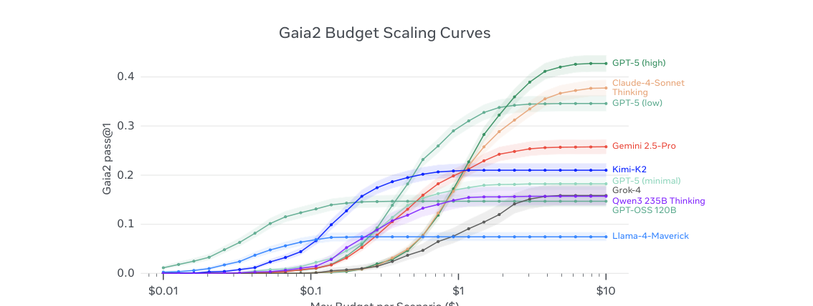
Figure 1: Gaia2 budget scaling curve: for each max budget, we plot P 1{scenario result = True ∧scenario cost < max budget}. Equipped with a simple ReAct-like scaffold (see Section 3), no model evaluated here dominates across the intelligence spectrum—each trades off capability, efficiency, and budget. At equal cost, some models fare better, yet all curves plateau, suggesting that standard scaffolds and/or models miss ingredients for sustained progress. Cost estimates from Artificial Analysis model pricing data (accessed September 10, 2025).
Published as a conference paper at ICLR 2026
ICLR 2026 会议论文
1INTRODUCTION1 引言
Reinforcement learning from verifiable rewards (RLVR) has emerged as a promising path for im- proving large language model (LLM) agents at scale in domains such as reasoning, coding, and tool- use, offering a more reliable alternative to preference-based methods (OpenAI, 2024b; DeepSeek-AI et al., 2025; Mistral-AI et al., 2025; MoonshotAI et al., 2025). At the same time, the use-cases of modern agents increasingly involve sustained long-horizon interaction with dynamic environments, where time, uncertainty, and collaboration play a central role. This has motivated the creation of LLM agent benchmarks (Mialon et al., 2023; Jimenez et al., 2024; Yao et al., 2024; Backlund & Petersson, 2025), yet most such benchmarks are static or synchronous: environments only change when the agents act, and evaluation typically ignores intermediate steps or actions. As a result, many of the challenges agents face in real deployments—such as handling asynchronous events, operating under temporal constraints, or adapting to noise and uncertainty—remain untested.
基于可验证奖励的强化学习（RLVR）已成为在推理、编程、工具使用等领域规模化提升大语言模型（LLM）智能体能力的一条可行路径，为基于偏好的方法提供了更可靠的替代（OpenAI, 2024b; DeepSeek-AI et al., 2025; Mistral-AI et al., 2025; MoonshotAI et al., 2025）。与此同时，现代智能体的使用场景日益涉及与动态环境的持续长时程交互，时间、不确定性与协作在其中居于核心地位。这催生了一批 LLM 智能体基准（Mialon et al., 2023; Jimenez et al., 2024; Yao et al., 2024; Backlund & Petersson, 2025），但其中大多数是静态或同步的：环境只在智能体行动时改变，评测通常忽略中间步骤或动作。结果，智能体在真实部署中面临的诸多挑战——处理异步事件、在时间约束下运行、适应噪声与不确定性等——仍未得到检验。
We introduce Gaia2, a benchmark designed to address these limitations by evaluating agents in asynchronous environments with verifiable tasks that, like GAIA (Mialon et al., 2023), are simple for humans but challenging for today’s AI models. Gaia2 scenarios are motivated by real deployed use cases: it generalizes information seeking to environments instead of web-only, Gaia2-Time reflects the requirements of scheduled task products (e.g., calendar and reminders), and Gaia2-Agent2Agent mirrors the recently proposed Agent2Agent protocol for interoperable multi-agent systems (Google Developers, 2025). Gaia2 consists of 1,120 human-annotated scenarios set in a smartphone-like environment with realistic apps (email, messaging, calendar, contacts, etc.), similar to AppWorld and ToolSandbox (Trivedi et al., 2024; Lu et al., 2024). Each scenario requires capabilities be- yond search and execution, including adaptability to new events, robustness to noise, resolution of ambiguity, temporal awareness, and collaboration with other agents. To enable reproducible and fine-grained evaluation, Gaia2 introduces a write action verifier that checks every state-changing action against oracle annotations, making the benchmark directly applicable to RLVR. Built on the Agents Research Environments (ARE) platform, Gaia2 provides abstractions for creating asyn- chronous environments and supports continuous extension of benchmarks. The core concepts of ARE, illustrated in Figure 2, allow generalization beyond Gaia2 to the definition of other bench- marks. In practice, this design reveals new failure modes: while frontier models achieve overall success rates around 42%, no system dominates across all capabilities, with strong reasoning often traded off against speed, robustness, or cost.
我们提出 Gaia2，旨在弥补上述不足：它在异步环境中以可验证的任务评测智能体，这些任务与 GAIA（Mialon et al., 2023）一样，对人类而言简单，对当今的 AI 模型却颇具挑战。Gaia2 的场景均源于真实部署的使用案例：它将信息获取从纯网页场景推广到整个环境；Gaia2-Time 对应定时任务类产品（如日历与提醒）的需求；Gaia2-Agent2Agent 则呼应近期提出的、面向可互操作多智能体系统的 Agent2Agent 协议（Google Developers, 2025）。Gaia2 包含 1,120 个人工标注的场景，设定在类智能手机环境中，内建电子邮件、消息、日历、联系人等贴近真实的应用，与 AppWorld 和 ToolSandbox（Trivedi et al., 2024; Lu et al., 2024）一脉相承。每个场景都要求搜索与执行之外的能力，包括对新事件的适应力、对噪声的鲁棒性、歧义消解、时间意识以及与其他智能体的协作。为实现可复现的细粒度评测，Gaia2 引入写动作验证器，将每个改变状态的动作与 oracle 标注逐一核对，使该基准可直接用于 RLVR。Gaia2 构建于 Agents Research Environments（ARE）平台之上，后者提供创建异步环境的抽象，并支持基准的持续扩展。如图 2 所示，凭借 ARE 的核心概念，这套思路可泛化到 Gaia2 之外的其他基准定义。在实践中，这一设计揭示了新的失败模式：前沿模型的整体成功率虽已达到 42% 左右，却没有任何系统能在所有能力上占优，强大的推理能力往往以速度、鲁棒性或成本为代价。
Contributions This paper makes three main contributions to advance the evaluation of LLM agents and to chart open directions for the next generation of practical systems:
主要贡献 本文的三项主要贡献旨在推进 LLM 智能体评测，并为下一代实用系统指出开放方向：
• ARE framework: We release Agents Research Environments, a general-purpose platform for building asynchronous, event-driven benchmarks that support scalable evaluation and data gen- eration for RL. • Gaia2 benchmark: We introduce Gaia2, the first benchmark unifying asynchronous execution, temporal reasoning, noise robustness, ambiguity resolution, and multi-agent collaboration under a verifiable evaluation framework directly usable for RLVR. • Empirical study: We evaluate leading proprietary and open-source models on Gaia2, exposing fundamental trade-offs between reasoning strength, efficiency, robustness, and cost.
• ARE 框架：我们发布 Agents Research Environments，一个构建异步、事件驱动基准的通用平台，支持可扩展的评测与面向 RL 的数据生成。• Gaia2 基准：我们提出 Gaia2，首个统一异步执行、时间推理、噪声鲁棒性、歧义消解与多智能体协作的基准，其可验证评测框架可直接用于 RLVR。• 实证研究：我们在 Gaia2 上评测领先的专有与开源模型，揭示推理强度、效率、鲁棒性与成本之间的根本性权衡。
2RELATED WORK2 相关工作
Benchmarking LLM agents A wide range of benchmarks have been proposed to measure agent capabilities. Embodied and web-based environments such as ALFWorld (Shridhar et al., 2021), WebShop (Yao et al., 2023a), WebArena (Zhou et al., 2024), and WorkArena (Drouin et al., 2024) emphasize grounded execution. Synthetic environments such as AppWorld (Trivedi et al., 2024) and ToolSandbox (Lu et al., 2025) introduce app-like tasks with state verification or milestone- based evaluation, while BFCL (Patil et al., 2025) targets large-scale function calling. Other efforts incorporate temporal dynamics and multi-agent interaction, including VendingBench (Backlund & Petersson, 2025), τ-Bench and τ 2-Bench (Yao et al., 2024; Barres et al., 2025), MultiAgentBench (Zhu et al., 2025), and MCP-based benchmarks (Wang et al., 2025; Team, 2025; Gao et al., 2025; Anthropic, 2024). Finally, static setups such as GAIA (Mialon et al., 2023), SWE-bench (Jimenez
LLM 智能体基准评测 领域已提出大量基准来衡量智能体能力。ALFWorld（Shridhar et al., 2021）、WebShop（Yao et al., 2023a）、WebArena（Zhou et al., 2024）与 WorkArena（Drouin et al., 2024）等具身与网页环境强调落地执行。AppWorld（Trivedi et al., 2024）与 ToolSandbox（Lu et al., 2025）等合成环境引入了带状态验证或基于里程碑评测的应用类任务，BFCL（Patil et al., 2025）则面向大规模函数调用。另有一批工作引入时间动态与多智能体交互，包括 VendingBench（Backlund & Petersson, 2025）、τ-Bench 与 τ 2-Bench（Yao et al., 2024; Barres et al., 2025）、MultiAgentBench（Zhu et al., 2025）以及基于 MCP 的基准（Wang et al., 2025; Team, 2025; Gao et al., 2025; Anthropic, 2024）。最后，GAIA（Mialon et al., 2023）、SWE-bench（Jimenez
Published as a conference paper at ICLR 2026
ICLR 2026 会议论文
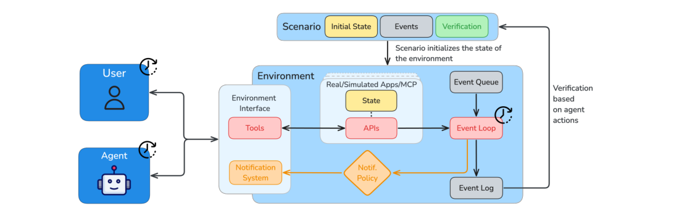
Figure 2: ARE environments are event-based, time-driven simulations, that run asynchronously from the agent and the user. ARE environments allows playing scenarios, which typically contain tasks for the agent and verification logic. Whether initiated by agent or user, interactions happen through the same interfaces and can be either tool calls, or tool output/notification observations. Extensive simulation control and logging allow precise study of agents behavior.
et al., 2024), and BrowseComp (Wei et al., 2025) evaluate only final outcomes. While these bench- marks each capture valuable aspects of agent reasoning, tool use, or collaboration, they remain synchronous and agent-driven: environments only change when the agent acts, and evaluation typi- cally ignores intermediate steps or actions. Gaia2 differs by introducing asynchronous, event-driven environments that stress temporal constraints, robustness, ambiguity resolution, and multi-agent co- ordination under a unified, verifiable evaluation.
et al., 2024）与 BrowseComp（Wei et al., 2025）则只评估最终结果。这些基准各自捕捉了智能体推理、工具使用或协作中的宝贵侧面，但仍属同步、由智能体驱动的范式：环境只在智能体行动时改变，评测通常忽略中间步骤或动作。Gaia2 的不同之处在于引入异步、事件驱动的环境，在统一且可验证的评测之下考验时间约束、鲁棒性、歧义消解与多智能体协调。
Verification in agentic benchmarks Verification strategies vary across benchmarks. GAIA (Mi- alon et al., 2023) evaluates correctness at the final output level via exact match. This suits search- style tasks but lacks flexibility in format and content, especially in web-based, evolving domains. ToolSandbox (Lu et al., 2025) introduces milestones and minefields that constrain the agent’s trajec- tory, enabling early checks of both outcomes and intermediate behavior. Beyond strictly verifiable domains, the Rubrics as Rewards framework (Gunjal et al., 2025; Starace et al., 2025; Lin et al., 2025) shows how checklist-style rubrics can serve as interpretable reward signals for subjective tasks, highlighting the broader potential of rubric-based evaluation. Gaia2 extends this with the ARE Verifier, which evaluates every state-changing write action against oracle annotations. It combines exact argument checks, rubric-guided judgments for flexible cases, and causal and temporal con- straints. Importantly, the verifier is a standalone contribution: a general mechanism for fine-grained, reproducible credit assignment reusable beyond Gaia2. While today’s models underperform, we expect future RLVR-trained systems to close the gap and eventually solve Gaia2.
智能体基准中的验证 不同基准的验证策略各异。GAIA（Mialon et al., 2023）通过精确匹配在最终输出层面评估正确性，适用于搜索类任务，但在格式与内容上缺乏灵活性，在基于网页且不断演化的领域尤其如此。ToolSandbox（Lu et al., 2025）引入里程碑与雷区来约束智能体的轨迹，可对结果与中间行为进行早期检查。在严格可验证的领域之外，Rubrics as Rewards 框架（Gunjal et al., 2025; Starace et al., 2025; Lin et al., 2025）展示了清单式评分准则（rubric）如何充当主观任务的可解释奖励信号，凸显了基于 rubric 的评测的更广泛潜力。Gaia2 在此之上扩展出 ARE Verifier：它将每个改变状态的写动作与 oracle 标注逐一核对，融合精确的参数检查、面向灵活情形的 rubric 引导判断，以及因果与时间约束。值得强调的是，该验证器是一项独立的贡献——一套细粒度、可复现的信用分配通用机制，可在 Gaia2 之外复用。尽管当今模型表现尚不理想，我们预期未来经 RLVR 训练的系统将缩小差距，并最终攻克 Gaia2。
3ARE: SCALING UP AGENT ENVIRONMENTS AND EVALUATIONS3 ARE：扩展智能体环境与评测
ARE is a research platform for creating simulated environments, running agents in them, and analyzing their behavior. ARE envi- ronments evolve continuously and are decoupled from the agent. Time advances in the simulation as the environment introduces events. Agents run asynchronously and interact with the user and environment through dedicated interfaces.
ARE 是一个研究平台，用于创建模拟环境、在其中运行智能体并分析其行为。ARE 环境持续演化，与智能体解耦；随着环境引入事件，模拟时间不断推进。智能体异步运行，通过专用接口与用户和环境交互。
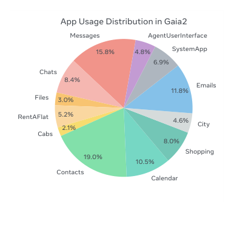
Figure 3: App usage distribu- tion across the 12 Mobile apps in Gaia2 for Llama 4 Maverick.
Core concepts At its foundation, ARE introduces a set of ab- stractions, illustrated in Figure 2, that make it possible to design rich, dynamic environments. More precisely: (i) apps are stateful APIs with associated content, analogous to applications such as messaging or email, each exposing tools that can be typed as read- only or write, enabling fine-grained control and verification; (ii) a collection of apps together with a time manager and governing rules forms an environment, which can host one or several agents; (iii) within these environments, events represent everything that happens, from tool calls and state changes to scheduled updates, and are fully logged, scheduled either at absolute timestamps or relative to others, and organized into dependency graphs; (iv) to surface relevant dynamics, notifi-
核心概念 在最基础的层面上，ARE 引入了一组抽象（见图 2），使设计丰富而动态的环境成为可能。具体而言：（i）app 是带有相关内容的有状态 API，类似消息或电子邮件等应用；每个 app 暴露的工具可标注为只读（read-only）或写（write）类型，从而支持细粒度的控制与验证；（ii）一组 app 连同时间管理器与治理规则构成一个环境，一个环境可承载一个或多个智能体；（iii）在这些环境中，事件涵盖发生的一切——从工具调用、状态变化到定时更新；事件被完整记录，按绝对时间戳或相对其他事件调度，并组织成依赖图；（iv）为了呈现相关动态，通知
Published as a conference paper at ICLR 2026
ICLR 2026 会议论文
cations provide a configurable observability layer: a policy selects which events are pushed to the agent’s context, enabling the study of proactive and reactive behavior under varying observability; and (v) scenarios extend static tasks into dynamic trajectories by specifying an initial state and a DAG of events, including the user’s request, intermediate events, and a verification method. Verifi- cation can run offline at the end of the run or online via scheduled validation events, and focuses on write operations to avoid over-constraining exploration strategies. To demonstrate the generality of these abstractions, we validated that ARE can faithfully reimplement existing agentic benchmarks such as τ-bench, τ 2-bench GAIA, and BFCL-v3, VendingBench(Yao et al., 2024; Barres et al., 2025; Mialon et al., 2023; Patil et al., 2025; Backlund & Petersson, 2025), confirming that the platform both subsumes current benchmarks and provides a foundation for the next generation of agentic evaluations. More details about ARE concepts are provided in Appendix A.1.
提供了一个可配置的可观测层：由策略决定哪些事件被推送到智能体上下文，从而支持在不同可观测性条件下研究主动与被动行为；（v）场景通过指定初始状态与事件 DAG（含用户请求、中间事件与验证方法），把静态任务扩展为动态轨迹。验证既可在运行结束时离线执行，也可通过定时验证事件在线执行；验证聚焦于写操作，以避免过度约束探索策略。为证明这些抽象的通用性，我们验证了 ARE 能够忠实地重新实现既有的智能体基准，如 τ-bench、τ 2-bench、GAIA、BFCL-v3 与 VendingBench（Yao et al., 2024; Barres et al., 2025; Mialon et al., 2023; Patil et al., 2025; Backlund & Petersson, 2025），从而确认该平台既涵盖现有基准，又为下一代智能体评测奠定了基础。ARE 概念的更多细节见附录 A.1。
Asynchronicity and time Because environments run asynchronously, model generations directly consume simulated time: if an agent takes longer to respond, the environment clock still advances, and external events may happen during its reasoning process. This design unlocks evaluations of temporal awareness and responsiveness, which are impossible to capture in synchronous settings.
异步性与时间 由于环境异步运行，模型生成会直接消耗模拟时间：智能体若响应较慢，环境时钟依然推进，外部事件可能在其推理过程中发生。这一设计使时间意识与响应能力成为可评测的对象，而这在同步设置中无从捕捉。
Mobile environment To demonstrate the versatility of the ARE abstractions, we release Mobile as an instantiation of a consumer mobile environment. It features twelve apps (Messages, Chats, Emails, Calendar, Contacts, Shopping, Cabs, Files, etc.) and 101 associated tools, similar in spirit to AppWorld (Trivedi et al., 2024) and ToolSandbox (Lu et al., 2024). Each “universe” represents a complete instance of this environment—the full state of all apps centered around a specific user. Applications are populated with synthetic but coherent data, seeded with personas sampled from Per- sonaHub (Ge et al., 2024) and propagated across apps via a dependency graph to ensure cross-app consistency (e.g., contacts align across messaging and email, events match calendar availability). Universes contain between 400K and 800K tokens of structured and unstructured content (exclud- ing filesystem contents), making them suited for long-context and long-horizon tasks. Mobile is governed by clear rules: each turn starts with a user message or a notified event and ends when the agent replies to the user. During the turn, simulated time advances continuously, and scenar- ios terminate either on task completion, when constraints on time or steps are exceeded, or when verification fails. While Mobile focuses on the consumer domain to leverage a unified app con- cept, the underlying ARE platform is environment-agnostic. The API definitions remain invariant across domains—for example, the interface for a Chats tool is identical whether in a mobile or desk- top setting. Consequently, the architecture presented here extends naturally to other domains such as desktop automation, customer support, and web browsing, where creating a new environment requires only defining the relevant tool interfaces.
移动环境 为展示 ARE 抽象的通用性，我们发布消费级移动环境的一个实例——Mobile。它包含十二个应用（Messages、Chats、Emails、Calendar、Contacts、Shopping、Cabs、Files 等）与 101 个相关工具，在理念上与 AppWorld（Trivedi et al., 2024）和 ToolSandbox（Lu et al., 2024）相近。每个“universe”代表该环境的一个完整实例，即以特定用户为中心的全部应用状态。各应用填充合成但自洽的数据：数据以从 PersonaHub（Ge et al., 2024）采样的 persona 为种子，经依赖图在各应用间传播，以保证跨应用一致性（例如联系人在消息与电子邮件之间保持一致，事件与日历可用性相互匹配）。每个 universe 含 400K 至 800K token 的结构化与非结构化内容（不含文件系统内容），适用于长上下文与长时程任务。Mobile 遵循明确的规则：每个回合以一条用户消息或一个通知事件开始，以智能体回复用户结束；回合期间模拟时间持续推进；场景在任务完成、超出时间或步数约束、或验证失败时终止。Mobile 虽聚焦消费领域以复用统一的应用概念，但其底层的 ARE 平台与具体领域无关：API 定义在不同领域保持不变——例如 Chats 工具的接口在移动与桌面环境中完全一致。因此，本文的架构可自然扩展至桌面自动化、客户支持、网页浏览等其他领域，创建新环境只需定义相应的工具接口。
Agent orchestration Running agents in ARE requires an orchestration compatible with its ab- stractions. For a fair evaluation, we use a model-agnostic scaffold based on a ReAct loop (Yao et al., 2023b), where the agent outputs one tool call per step in structured JSON. The orchestration is aug- mented with pre-step and post-step hooks: before each LLM call, notifications queued in the environment are injected into the agent’s context; after the tool call, the agent termination condition is checked. This minimal extension preserves the simplicity of ReAct while making it compatible with asynchronous and multi-turn environments. Alternative orchestrations can be easily plugged in. To ensure that this sequential scaffolding does not artificially bottleneck performance, we compared it against a Parallel Tool Calling (PTC) orchestration in Appendix B.3.2. Results show that PTC can improve efficiency (wall clock time and token usage) but not performance (see Table 6), confirming that the observed limitations are intrinsic to model capabilities rather than the scaffold.
智能体编排 在 ARE 中运行智能体，需要一套与其抽象兼容的编排。为保证评测公平，我们采用基于 ReAct 循环（Yao et al., 2023b）的模型无关 scaffold：智能体每一步以结构化 JSON 输出一个工具调用。该编排辅以 pre-step 与 post-step 钩子——每次 LLM 调用前，把环境中排队的通知注入智能体上下文；工具调用后，检查智能体的终止条件。这一最小化扩展既保留了 ReAct 的简洁性，又使其兼容异步与多回合环境；其他编排也可轻松接入。为确保这一顺序式 scaffold 不会人为构成性能瓶颈，我们在附录 B.3.2 中将其与并行工具调用（PTC）编排进行比较。结果表明，PTC 能提升效率（挂钟时间与 token 用量），却无法提升性能（见表 6），证实所观察到的局限源于模型能力本身，而非 scaffold。
4GAIA2: EXPANDING GENERAL AGENT EVALUATION4 GAIA2：扩展通用智能体评测
Building on the abstractions of ARE, we introduce Gaia2, consisting of 800 unique verifiable sce- narios, carefully annotated by humans across 10 distinct universes in the Mobile environment, with 101 tools each. The scenarios are organized into splits, each targeting one agent capability defined below. To support rapid and cost-effective evaluations, we also curate a 160-scenario subset, Gaia2-mini. The benchmark includes two augmentation setups derived from Gaia2-mini, adding 320 scenarios to the original 800 for a total of 1,120 scenarios.
在 ARE 抽象的基础上，我们提出 Gaia2：800 个独特的可验证场景，由人工在 Mobile 环境的 10 个不同 universe 中精心标注，每个 universe 含 101 个工具。场景划分为若干 split，每个 split 针对下文定义的一种智能体能力。为支持快速、低成本的评测，我们还精选了 160 个场景的子集 Gaia2-mini。基准另含两个由 Gaia2-mini 衍生的增强设置：在原有 800 个场景之上增加 320 个，共计 1,120 个场景。
Published as a conference paper at ICLR 2026
ICLR 2026 会议论文
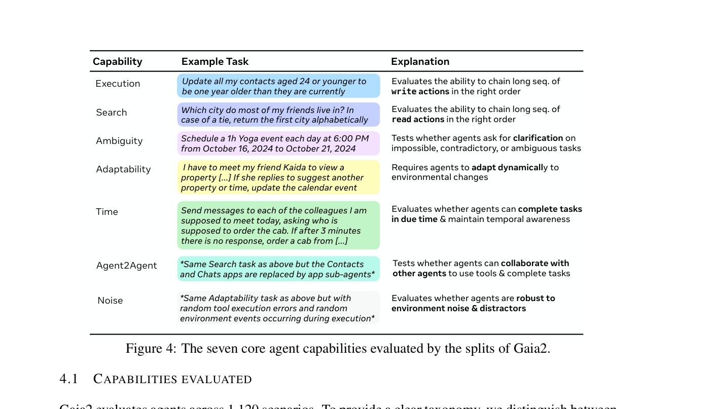
Figure 4: The seven core agent capabilities evaluated by the splits of Gaia2.
Gaia2 evaluates agents across 1,120 scenarios. To provide a clear taxonomy, we distinguish between Core Capabilities (Execution, Search, Ambiguity, Adaptability, Time) and Augmentations (Noise, A2A). The five core splits comprise 800 unique, human-authored scenarios, each instantiated with a unique event DAG and initial environment state. We treat these core categories as dominant “flavors” rather than strictly orthogonal dimensions. In practice, any natural task is inherently compositional (e.g., a Time task often requires Search and Execution). Consequently, we explicitly chose not to in- troduce a separate “compositional” split; our early experiments with scenarios artificially combining three or more distinct capabilities resulted in unnatural tasks that lacked a clear evaluation signal. Instead, we rely on the organic compositionality present in the core splits to ensure tasks remain realistic while still allowing for clear failure-mode attribution.
Gaia2 在 1,120 个场景上评测智能体。为给出清晰的分类体系，我们区分核心能力（Execution、Search、Ambiguity、Adaptability、Time）与增强（Noise、A2A）。五个核心 split 包含 800 个独特的人工撰写场景，每个场景均以唯一的事件 DAG 和初始环境状态实例化。我们将这些核心类别视为主导性的“风味”，而非严格正交的维度：实践中，任何自然任务本质上都是复合的（例如 Time 任务往往需要 Search 与 Execution）。因此，我们明确不设单独的“复合”split——早期实验表明，人为组合三种及以上能力的场景往往失真，且缺乏清晰的评测信号。相反，我们依赖核心 split 中天然存在的复合性，既保证任务贴近真实，又支持清晰的失败模式归因。
Environment augmentations The Noise and Agent-to-Agent (A2A) splits are environment-level modifiers applied to base scenarios to stress-test robustness and collaboration. Because our veri- fier checks state changes rather than specific tool traces, these augmentations do not require new annotations. In the Noise split, we inject controlled perturbations, including tool anomalies (e.g., random execution failures, signature changes) and irrelevant environment events (e.g., incoming spam emails). In the A2A split, apps are replaced by “app-agents”. The main agent loses direct access to these apps’ tools and must instead coordinate with the app-agents via messaging to solve the task. App-agents are not fully autonomous: they are invoked on-demand to execute specific subtasks and return a report. This setting explicitly evaluates the main agent’s ability to decompose goals and coordinate under partial observability. In our evaluation setting, main- and app-agents use the same underlying model.
环境增强 Noise 与 Agent-to-Agent（A2A）split 是施加于基础场景的环境级修改器，用于压测鲁棒性与协作能力。由于验证器检查的是状态变化而非具体工具调用轨迹，这些增强无需新的标注。在 Noise split 中，我们注入受控扰动，包括工具异常（如随机执行失败、签名变更）与无关环境事件（如收到的垃圾邮件）。在 A2A split 中，应用被“app-agents”取代：主智能体失去对这些应用工具的直接访问，必须借助消息与应用智能体协调来完成任务。应用智能体并非完全自主——它们按需被调用以执行特定子任务并返回报告。这一设置明确考察主智能体在部分可观测条件下分解目标与协调的能力。在我们的评测设置中，主智能体与应用智能体使用相同的底层模型。
4.2SCENARIO DESIGN AND ANNOTATION PROTOCOL4.2 场景设计与标注协议
We construct Gaia2 scenarios using the ARE annotation interface (see Appendix A.4 for details), which lets annotators explore a generated Mobile universe. Their task is to create DAGs of write actions and environment events as ground truth. Starting from the generated environment, annota- tors design scenarios that isolate and stress a single capability at a time (e.g., Adaptability, Time), ensuring a clear signal of model strengths and weaknesses.
我们使用 ARE 标注界面（详见附录 A.4）构建 Gaia2 场景，标注者可在其中探索生成的 Mobile universe，其任务是将写动作与环境事件构成的 DAG 制作为 ground truth。从生成的环境出发，标注者设计一次只隔离并强化单一能力（如 Adaptability、Time）的场景，以确保模型优劣的信号清晰可辨。
Each scenario undergoes multiple rounds of validation by independent annotators, followed by a consistency check. We complement this process with automated guardrails (e.g., structural con- straints on event graphs) and post-hoc difficulty calibration using a baseline agent. This combination yields a diverse, challenging, and verifiable set of scenarios while reducing annotation errors. We provide more details on our annotation process and guidelines in Appendix B.1.
每个场景均经独立标注者多轮验证，再进行一致性检查。我们还辅以自动化防护（如事件图上的结构约束）与基于基线智能体的事后难度校准。这一组合既造就了多样、具挑战性且可验证的场景集合，又降低了标注错误率。标注流程与指南的更多细节见附录 B.1。
Published as a conference paper at ICLR 2026
ICLR 2026 会议论文
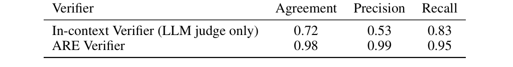
Table 1: ARE Verifier and In-context Verifier on 450 hand-labeled validation trajectories.
4.3VERIFIER4.3 验证器
The ARE Verifier evaluates agent trajectories against a minimal oracle sequence. Unlike final- answer judges, it is goal-oriented rather than path-optimal. We distinguish read from write actions: agents may execute unlimited read steps (e.g., browsing) for exploration without penalty, as only write steps modify the environment and count toward goals. The verifier is also order- agnostic regarding independent goals.
ARE Verifier 将智能体轨迹与一个最小 oracle 序列进行核对。与只看最终答案的裁判不同，它以目标为导向，而非要求路径最优。我们区分读动作与写动作：智能体可无惩罚地执行任意多次读步骤（如浏览）用于探索——只有写步骤才会修改环境并计入目标。对于相互独立的目标，验证器也不依赖执行顺序。
Evaluation covers four dimensions: (i) Consistency—tool names/counts must match; arguments use exact matching for rigid fields (IDs) and LLM rubrics for flexible ones (text), with anti-hacking checks; (ii) Causality—actions must respect dependency DAGs (parents before children); (iii) Tim- ing—enforced via tolerance windows; and (iv) Completeness—success requires matching all oracle write actions.
评测覆盖四个维度：（i）一致性——工具名称/数量必须匹配；参数在刚性字段（ID）上采用精确匹配，在柔性字段（文本）上采用 LLM rubric，并辅以反投机（anti-hacking）检查；（ii）因果性——动作必须遵循依赖 DAG（父节点先于子节点）；（iii）时序——通过容差窗口强制执行；（iv）完整性——成功要求匹配全部 oracle 写动作。
On 450 labeled trajectories (Table 1), the verifier achieves 0.98 agreement and 0.99 precision, outper- forming LLM-only baselines. Beyond Gaia2, it serves as a reusable component for faithful bench- marking and RLVR training in any ARE-based environment. Further details are in Appendix B.2.
在 450 条带标注的轨迹上（表 1），验证器取得 0.98 的一致性与 0.99 的精确率，优于纯 LLM 基线。超越 Gaia2 之上，它还是一个可复用的组件，可用于任何基于 ARE 的环境中的忠实基准评测与 RLVR 训练。更多细节见附录 B.2。
5EXPERIMENTS5 实验
In our core experiments, we evaluate state-of-the-art models on each Gaia2 capability split (Moon- shotAI et al., 2025; Gemini Team, 2025; Yang et al., 2025; Llama Team, 2024; OpenAI, 2024a). We also test the sensitivity of models to various evaluation configurations for Time and Agent2Agent.
在核心实验中，我们在 Gaia2 的各个能力 split 上评测最先进的模型（MoonshotAI et al., 2025; Gemini Team, 2025; Yang et al., 2025; Llama Team, 2024; OpenAI, 2024a），并检验模型对 Time 与 Agent2Agent 不同评测配置的敏感性。
Experimental setup We use the same ReAct-style baseline scaffold (Section 3) for all evaluations in order to ensure consistent comparisons across models and providers. All LLMs are evaluated at full context length (≥128K tokens), temperature 0.5, and 16K token generation limits per turn. Scenarios are run three times to account for potential variance, and are terminated when one of the following conditions is met:
实验设置 所有评测均使用相同的 ReAct 风格基线 scaffold（第 3 节），以确保跨模型、跨提供商比较的一致性。所有 LLM 均在完整上下文长度（≥128K token）、温度 0.5、每回合 16K token 生成上限下评测。每个场景运行三次以计入潜在方差，满足以下任一条件即终止：
(i) 200 steps, (ii) context overflow, i.e., the agent exceeds the available context window (failure), (iii) verification completion, i.e., the verifier determines the trajectory outcome—either by failing at some turn or by successfully passing verification at every turn, or (iv) timeout. The environment provides tools and notifications via system prompts, with notification verbosity set to medium by default: agents receive systematic alerts for high-priority events while filtering out lower-priority background notifications.
（i）200 步；（ii）上下文溢出，即智能体超出可用上下文窗口（失败）；（iii）验证完成，即验证器判定轨迹结果——或在某一回合失败，或在每一回合均成功通过验证；（iv）超时。环境通过系统提示词提供工具与通知，通知详细程度默认为中等：智能体会对高优先级事件收到系统性提醒，而较低优先级的后台通知则被过滤。
We handle deployment issues like outages and rate limits using a simulated generation time—pausing during responses and resuming with a matching time offset—to preserve realistic timing while enabling robust evaluation. The ARE Verifier uses Llama-3.3-70B-Instruct at temperature 0. For more details on our experimental procedure, please see Appendix B.4.
对于服务中断、速率限制等部署问题，我们采用模拟生成时间来处理——在响应期间暂停计时，再以相应的时间偏移恢复——从而在保持真实时序的同时实现稳健评测。ARE Verifier 使用 Llama-3.3-70B-Instruct，温度设为 0。实验流程的更多细节见附录 B.4。
5.1CORE RESULTS5.1 核心结果
Our core experimental results are presented in Table 2, Figure 5, and Figure 6. Among Gaia2 splits, Execution and Search emerge as the easiest, consistent with prior benchmark saturation (Trivedi et al., 2024; Lu et al., 2024). Ambiguity and Adaptability remain challenging, with only Claude-4- Sonnet and GPT-5 (high) achieving robust performance. The Time split further differentiates frontier models: only Gemini 2.5 Pro and Sonnet achieve meaningful scores, reflecting their efficiency- latency advantages (Figure 6). Noise robustness also lags, with most models scoring below 20 de- spite GPT-5 (high) reaching 35.4%. Agent2Agent collaboration benefits weaker models more than frontier systems (see Figure 10). Overall, GPT-5 (high) leads with 42.1% pass@1, maintaining an 8-point margin over Sonnet across all categories. Kimi-K2 distinguishes itself among open mod-
核心实验结果见表 2、图 5 与图 6。在 Gaia2 的各 split 中，Execution 与 Search 最容易，这与以往基准的饱和趋势一致（Trivedi et al., 2024; Lu et al., 2024）。Ambiguity 与 Adaptability 仍然困难，只有 Claude-4-Sonnet 与 GPT-5 (high) 能取得稳健表现。Time split 进一步拉开了前沿模型的差距：只有 Gemini 2.5 Pro 与 Sonnet 取得有意义的分数，反映出二者在效率-延迟上的优势（图 6）。噪声鲁棒性同样滞后：尽管 GPT-5 (high) 达到 35.4%，多数模型得分仍低于 20。Agent2Agent 协作对较弱模型的助益大于前沿系统（见图 10）。总体来看，GPT-5 (high) 以 42.1% pass@1 领跑，在所有类别上保持对 Sonnet 约 8 个百分点的优势。Kimi-K2 在开源模型中脱颖而出，
Published as a conference paper at ICLR 2026
ICLR 2026 会议论文
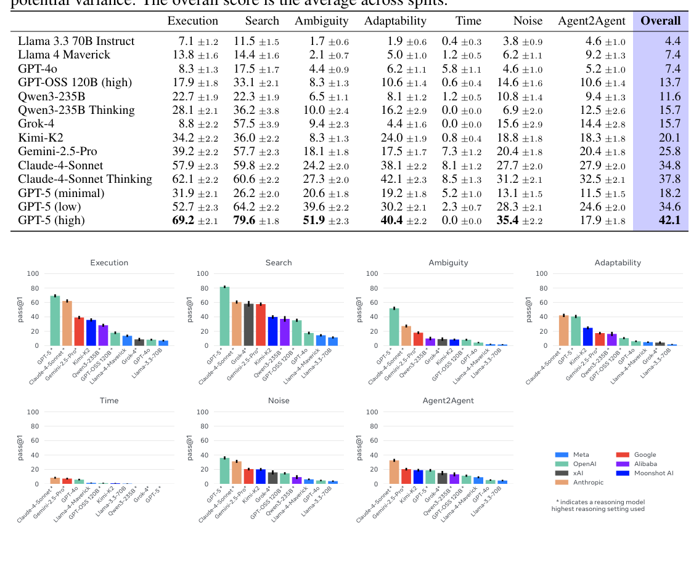
Figure 5: Gaia2 scores per capability split. Models are reranked independently for each capability, highlighting where they excel or struggle.
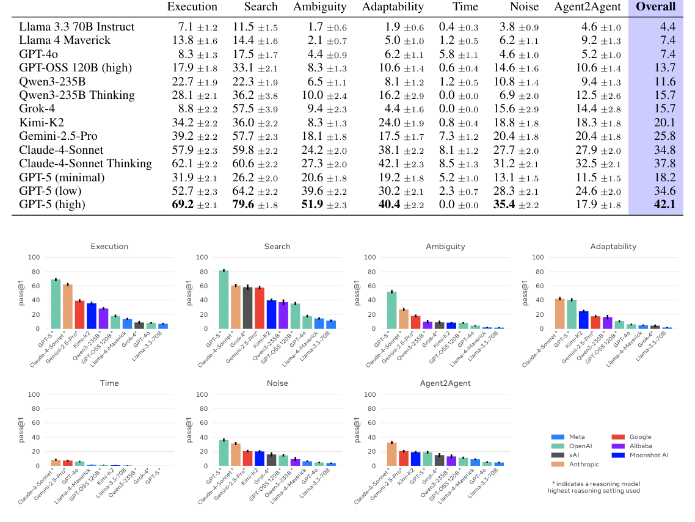
Table 2: Pass@1 scores on Gaia2 scenarios per model and capability split. All models are evaluated with the same baseline ReAct scaffolding described in Section 3 and with three runs to account for potential variance. The overall score is the average across splits.
els, particularly on Adaptability. While instruction-following and search tasks are largely solved, robustness, ambiguity resolution, and collaboration remain open challenges.
尤其是在 Adaptability 上。指令遵循与搜索类任务已基本解决，但鲁棒性、歧义消解与协作仍是悬而未决的挑战。
In Figures 6 and 7, we extend our analysis beyond raw scores to identify the finer-grained factors that drive performance differences between models on Gaia2. In addition, since agents are ultimately intended for deployment in production settings, we evaluate their performance in relation to their computational cost1 and execution time.
在图 6 与图 7 中，我们把分析拓展到原始分数之外，以识别驱动模型在 Gaia2 上表现差异的更细粒度因素。此外，智能体终究要部署到生产环境，因此我们还结合计算成本与执行时间来评估其表现。
Cost-performance trade-offs Figure 6 reveals clear cost-performance-time trade-offs. GPT-5’s reasoning models demonstrate direct scaling: higher test-time compute yields better performance but longer solution times. Claude 4 Sonnet costs roughly 3× more than GPT-5 (low) for comparable accuracy but operates much faster. Outliers include the inefficient Grok-4 and cost-effective Kimi- K2. While an average human annotator can solve every task, they are slower than all models, partly due to using ARE’s GUI rather than a native OS. These findings highlight the need for cost- normalized evaluation metrics. Comparing model parameters or FLOPs alone inadequately reflects real-world deployment conditions. Success rate per dollar better captures how agents will be judged in practice—by reliable, efficient task completion under resource constraints.
成本-性能权衡 图 6 揭示了清晰的成本-性能-时间三方权衡。GPT-5 的推理模型呈现出直接的扩展规律：更高的测试时计算带来更好的性能，但求解时间更长。Claude 4 Sonnet 在相近准确率下成本约为 GPT-5 (low) 的 3 倍，但运行速度快得多。离群点包括效率偏低的 Grok-4 与高性价比的 Kimi-K2。普通人类标注者虽能解开所有任务，却比所有模型都慢，部分原因在于他们使用 ARE 的 GUI 而非原生操作系统。这些发现凸显了成本归一化评测指标的必要性：仅比较模型参数量或 FLOPs 不足以反映真实部署条件。每美元成功率更能刻画智能体在实践中的评判标准——在资源约束下可靠、高效地完成任务。
Performance drivers We examine behavioral factors correlating with Gaia2 performance. Two hypotheses guide our analysis: (1) exploration drives success through increased tool use and sys- tematic information gathering before write operations, and (2) comprehensive reasoning via token generation improves performance. Figure 7 confirms both relationships: performance correlates
性能驱动因素 我们考察与 Gaia2 性能相关的行为因素，分析基于两个假设：（1）探索通过增加工具使用、在写操作前系统性收集信息来驱动成功；（2）借助 token 生成进行充分推理可提升性能。图 7 证实了这两种关系：性能与
Published as a conference paper at ICLR 2026
ICLR 2026 会议论文
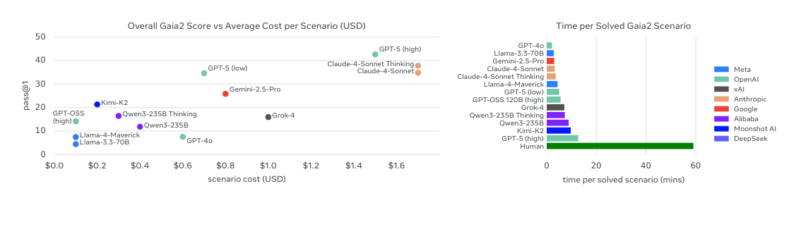
Figure 6: Left: Gaia2 score vs average scenario cost in USD. Right: Time taken per model to successfully solve Gaia2 scenarios compared to Humans.
positively with tool calls (left) and output tokens (right). However, Claude-4 Sonnet and Kimi-K2 stand out as notable outliers, achieving high performance (35% and 21% respectively) while pro- ducing relatively few tokens—suggesting exceptional efficiency, perhaps due to larger parameter counts or specialized architectures. Within families, we observe a striking contrast between the base and “Thinking” variants of Claude and Qwen: the latter generate more tokens per step but take fewer steps overall, leading to higher pass@1 and lower cost per solved scenario, effectively trad- ing verbosity for efficiency (e.g., Qwen-235B Thinking vs. Qwen-235B). App usage patterns were nearly identical across models (Figure 3), indicating that performance differences stem primarily from general reasoning capabilities rather than app-specific preferences.
工具调用次数（左）与输出 token 数（右）均呈正相关。但 Claude-4 Sonnet 与 Kimi-K2 是显著的离群点：二者在 token 产出相对较少的情况下分别取得 35% 与 21% 的高性能——暗示其效率出众，可能源于更大的参数量或专门的架构。在同一模型家族内，Claude 与 Qwen 的基础版与“Thinking”版对比鲜明：后者每步生成更多 token，总步数却更少，从而带来更高的 pass@1 与更低的单场景求解成本——实际上是以冗长换取效率（如 Qwen-235B Thinking 对比 Qwen-235B）。各模型的应用使用模式几乎一致（图 3），表明性能差异主要源于通用推理能力，而非对特定应用的偏好。
5.2TIME REVEALS THE IMPACT OF INFERENCE SPEED—AND SYSTEM RELIABILITY5.2 Time 揭示推理速度与系统可靠性的影响
We evaluate Gaia2-Time in two modes. As shown in Figure 8 (left), removing generation latency (“instant” mode) improves all models, with the largest gains for reasoning models: Sonnet rises from 8.1% to 26.7%, and GPT-5 (high) from 0.0% to 34.4%. Weaker models improve modestly due to the difficulty of the tasks, while Gemini 2.5 Pro combines strong performance with low latency and therefore best supports timing requirements. In the default mode, we observe inverse scaling in the Time capability: models trade Time performance for Execution performance due to longer thinking, see Figure 8 right. This underscores the need for adaptive compute—using shallow models and performing deeper reasoning only when necessary. Besides inference speed, the Time split also underlines the need for reliable infrastructure to serve responsive models without rate limits and server downtime in order to handle time-sensitive tasks. Finally, some Time scenarios require concurrent actions within narrow windows, which our single-threaded scaffold cannot fully express. Parallel orchestration is a promising direction to solve this type of scenarios.
我们以两种模式评测 Gaia2-Time。如图 8（左）所示，移除生成延迟（“instant”模式）使所有模型都有所提升，其中推理模型收益最大：Sonnet 从 8.1% 升至 26.7%，GPT-5 (high) 从 0.0% 升至 34.4%。较弱的模型因任务难度所限提升有限；Gemini 2.5 Pro 则兼顾强劲表现与低延迟，最能满足时序要求。在默认模式下，我们观察到 Time 能力上的逆向扩展：模型因思考时间更长而以 Time 性能换取 Execution 性能（见图 8 右）。这凸显了自适应计算的必要性——用浅层模型处理常规任务，仅在必要时进行更深的推理。除推理速度外，Time split 还凸显了可靠基础设施的重要性：要处理时间敏感任务，必须以无限速、无停机的服务支撑响应式模型。此外，部分 Time 场景要求在狭窄窗口内并发执行动作，而我们的单线程 scaffold 无法完全表达这一需求；并行编排是攻克此类场景的可行方向。
5.3A CLOSER LOOK AT MULTI-AGENT COLLABORATION ON GAIA2 WITH AGENT2AGENT5.3 借助 Agent2Agent 深入考察 Gaia2 上的多智能体协作
Inspired by recent work pushing beyond single-LLM agent tool-use and towards agent teams that message, coordinate, and divide labor (Google Developers, 2025), we study multi-agent collabora-
受近期工作的启发——它们推动智能体超越单一 LLM 的工具使用，走向通过消息传递、协调与分工来协作的智能体团队（Google Developers, 2025）——我们研究 Gaia2 场景上的多智能体协作。
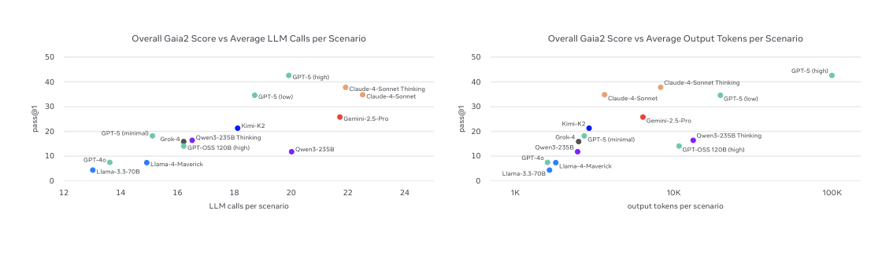
Figure 7: Left: Gaia2 pass@1 versus average model calls per scenario. The performance of models is highly correlated to the number of tool calls, emphasizing the importance of exploration. Right: Gaia2 pass@1 score versus average output tokens per scenario (log scale). Claude 4 Sonnet, while costing a lot exists beyond the Pareto frontier.
Published as a conference paper at ICLR 2026
ICLR 2026 会议论文
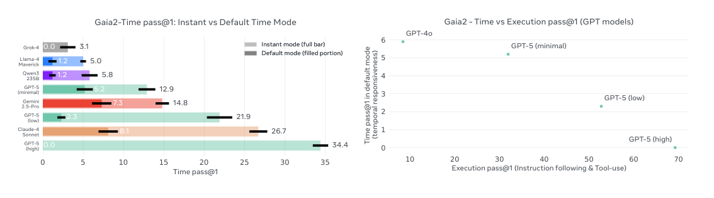
Figure 8: Left: Pass@1 on Gaia2-Time in default vs. instant. Right: Inverse scaling on Time—reasoning-heavy models are slower and miss deadlines.
tion on Gaia2 scenarios. We focus on two models at different points in the cost-quality curve: Llama 4 Maverick, a lighter-weight model, and Claude 4 Sonnet, the strongest overall LLM on standard Agent2Agent (Table 2).
我们聚焦于成本-质量曲线上两个不同位置的模型：较轻量的 Llama 4 Maverick，以及在标准 Agent2Agent 设定下综合最强的 LLM——Claude 4 Sonnet（表 2）。
For the weaker Llama 4 Maverick, centralized collaboration on Gaia tasks improves both perfor- mance with pass@k and operational stability. As the agent-to-agent ratio r increases, we observe more favorable scaling with repeated sampling and a lower incidence of tool-call errors per step (Figure 9 right; Figure 10). However, the trends observed for Llama 4 are not universal. For Claude 4 Sonnet, increasing the collaborator ratio r – and thus the degree of task decomposition – does not improve cost-normalized performance under best-of-k sampling: score per token plateaus with or without multi-agent collaboration. Similarly, collaboration ratio with Agent2Agent has a weak negative effect on tool call error frequency.
对较弱的 Llama 4 Maverick 而言，在 Gaia 任务上进行中心化协作能同时提升 pass@k 性能与运行稳定性。随着智能体间比例 r 增大，重复采样下的扩展更有利，每步工具调用错误率也更低（图 9 右；图 10）。然而，Llama 4 上的趋势并不普遍：对 Claude 4 Sonnet 而言，提高协作者比例 r（即提高任务分解程度）并不能在 best-of-k 采样下改善成本归一化性能——无论有无多智能体协作，每 token 得分都趋于平台。类似地，Agent2Agent 的协作比例对工具调用错误频率有微弱的负面影响。
One explanation for these findings may lie in the fact that Agent2Agent induces hierarchical decom- position into decision-making. As shown in Figure 9 left, sub-goals issued by a main-agent to an app-agent instantiate temporally extended actions akin to options (Sutton et al., 1999). Under this lens, gains in performance may materialize only when the benefits of decomposition outweigh the costs. For example, Agent2Agent may increase task score only when sub-goals set by main-agents are well-scoped and both app- and main-agents are capable of reliably exchanging state & intent during message-passing. Likewise, the addition of hierarchy can result in cascading errors and/or saturating gains if post-training has fit models to long-form, single-agent planning and tool-use; in this regime, coordination may introduce overhead that offsets accuracy and efficiency gains.
一种可能的解释是：Agent2Agent 将层级分解引入了决策过程。如图 9（左）所示，主智能体向应用智能体下达的子目标实例化出时间上延展的动作，类似 options（Sutton et al., 1999）。从这一视角看，只有当分解收益超过其成本时，性能提升才会显现。例如，只有当主智能体设定的子目标范围得当、且应用智能体与主智能体都能在消息传递中可靠地交换状态与意图时，Agent2Agent 才可能提高任务得分。同样，若后训练使模型拟合的是长篇的单智能体规划与工具使用，引入层级则可能导致级联错误和/或收益饱和；此时协调引入的开销可能抵消准确性与效率上的收益。
Heterogeneous teams open a new compute scaling axis for task automation, for example, by keeping a strong main agent to plan/decompose tasks while swapping in cheaper app-agents to execute sub- goals2. Empirically, replacing Llama 4 Maverick app-agents with Claude app-agents boosts pass@1 for both main-agent settings (16.2 with Llama-main, 29.3 with Claude-main), while the fully light
异构团队为任务自动化开辟了新的计算扩展轴：例如保留强大的主智能体负责规划/分解任务，同时换入更便宜的应用智能体执行子目标。实证上，用 Claude 应用智能体替换 Llama 4 Maverick 应用智能体，可同时提升两种主智能体设置的 pass@1（Llama-main 为 16.2，Claude-main 为 29.3）；而全轻量配置最弱（8.5）。
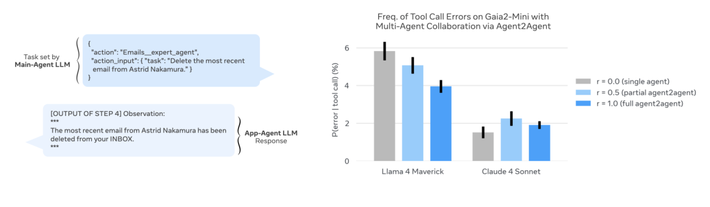
Figure 9: Agent2Agent tests whether LLM agents can collaborate through message passing in or- der to solve Gaia2 tasks via sub-task decomposition. For lighter-weight LLMs, collaboration in Agent2Agent results in a lower incidence of tool call errors. Left: Sample exchange between Llama 4 Maverick main vs app agent in an Agent2Agent scenario. Right: Frequency of errors per tool call (lower is better) on Gaia-2 mini for Llama 4 Maverick and Claude 4 Sonnet.
Published as a conference paper at ICLR 2026
ICLR 2026 会议论文
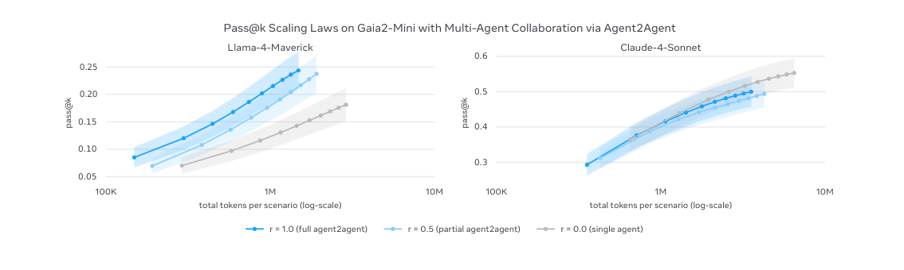
Figure 10: Increasing the number of multi-agent collaborators in Gaia2 scenarios by increasing the Agent2Agent ratio “r” improves pass@k scaling laws for Llama 4 Maverick, but does not improve token cost vs score tradeoffs with repeated sampling for Claude 4 Sonnet.
Main-Agent LLM主智能体 LLM
Llama 4 Maverick Claude 4 Sonnet
Llama 4 Maverick Claude 4 Sonnet
App-Agent LLM Llama 4 Maverick 8.5 ±1.7 16.2 ±0.7 Claude 4 Sonnet 18.3 ±0.7 29.3 ±2.9
应用智能体 LLM Llama 4 Maverick 8.5 ±1.7 16.2 ±0.7 Claude 4 Sonnet 18.3 ±0.7 29.3 ±2.9

Table 3: Probing cross-model collaboration in Gaia2-mini Agent2Agent scenarios: we evaluate pass@1 across main- vs app-agent pairings with Llama 4 Maverick and Claude 4 Sonnet in the fully collaborative Agent2Agent setting (r = 1). The results are averaged over three runs and presented with the standard error.
configuration is weakest (8.5). This suggests that for existing LLMs, Gaia2 task completion re- mains sensitive to execution fidelity at the app-agent level: stronger executors improve outcomes even when the main agent is light. Similarly, pairing a strong main agent with light executors still outperforms the all-light team (18.3 with Claude-main + Llama-app), indicating that higher-quality sub-goal specification and critique from the main-agent contribute independent gains. These find- ings are consistent with prior work suggesting heterogeneous multi-agent systems can trade planning capacity against execution fidelity to manage compute-quality trade-offs.
全轻量配置最弱（8.5）。这表明对现有 LLM 而言，Gaia2 任务完成仍对应用智能体层面的执行保真度敏感：即便主智能体轻量，更强的执行者也能改善结果。类似地，强主智能体搭配轻量执行者仍优于全轻量团队（Claude-main + Llama-app 为 18.3），说明主智能体提供的高质量子目标规约与批评带来独立收益。这些发现与先前工作一致：异构多智能体系统可以通过在规划能力与执行保真度之间取舍，来管理计算-质量权衡。
6CONCLUSION & DISCUSSION6 结论与讨论
ARE introduces an asynchronous, event-driven evaluation framework with action-level verification, enabling reproducible benchmarking directly applicable to RLVR. Its abstractions—apps, events, notifications, and scenarios—along with the MOBILE environment provide an extensible foundation for community-driven evaluations and RL data generation. Gaia2 demonstrates that no model domi- nates across all capabilities: GPT-5 (high) achieves the best overall accuracy (42% pass@1), Claude- 4 Sonnet offers competitive performance with lower latency, and Kimi-K2 leads among open-source systems (20%). Scaling curves reveal fundamental cost–time–accuracy trade-offs, highlighting the need for cost-normalized reporting.
ARE 引入了一个带动作级验证的异步、事件驱动评测框架，使可直接用于 RLVR 的可复现基准评测成为可能。其抽象——应用、事件、通知与场景——连同 MOBILE 环境，为社区驱动的评测与 RL 数据生成提供了可扩展的基础。Gaia2 表明，没有任何模型能在所有能力上占优：GPT-5 (high) 取得最佳总准确率（42% pass@1），Claude-4 Sonnet 以更低延迟给出有竞争力的表现，Kimi-K2 领跑开源系统（20%）。扩展曲线揭示了根本性的成本-时间-准确率三方权衡，凸显了成本归一化报告的必要性。
Verification at the action level scales more effectively than end-state comparisons and supports fine- grained credit assignment. The ARE Verifier matches human annotations with high fidelity (0.99 precision, 0.95 recall), while uncovering issues such as “judge-hacking.” Robust verifier design is thus critical for both evaluation and RL training; hybrid approaches combining scalar rewards with preference signals remain an open direction.
动作级验证比终态比较更具扩展性，且支持细粒度的信用分配。ARE Verifier 以高保真度匹配人类标注（精确率 0.99、召回率 0.95），同时暴露出“judge-hacking”等问题。因此，稳健的验证器设计对评测与 RL 训练都至关重要；融合标量奖励与偏好信号的混合方法仍是开放方向。
Finally, Gaia2’s Time split and A2A experiments underscore the critical role of orchestration. The inverse scaling observed in Time-sensitive tasks suggests that future agents require adaptive com- pute strategies: deploying fast, lightweight reasoning for routine tasks while reserving deeper delib- eration for complex ones. Simultaneously, the A2A results demonstrate that orchestration extends to collaboration, where heterogeneous teams can outperform monolithic models through effective delegation.
最后，Gaia2 的 Time split 与 A2A 实验凸显了编排的关键作用。时间敏感任务中观察到的逆向扩展表明，未来的智能体需要自适应计算策略：为常规任务采用快速、轻量的推理，仅在复杂任务上保留更深入的深思。与此同时，A2A 结果表明编排同样延伸到协作领域——异构团队可以通过有效委托超越单体模型。
Published as a conference paper at ICLR 2026
ICLR 2026 会议论文
ACKNOWLEDGEMENTS致谢
We thank Nikolay Bashlykov, Radhika Bhargava, Misha Bilenko, Carly Burton, Adrien Carreira, Onur C¸ elebi, Neha Choudhari, Mike Clark, Levi Corallo, Paul Deveau, Jenny Fant, Cl´ementine Fourrier, Thibaut Frere, Avijit Ghosh, Christian Keller, Pascal Kesseli, Abhishek Kumawat, Flo- rian Laplantif, Baohao Liao, Alexandre Linares, Chaya Nayak, Rohit Patel, Daryl Rodrigo, Marija
我们感谢 Nikolay Bashlykov, Radhika Bhargava, Misha Bilenko, Carly Burton, Adrien Carreira, Onur C¸ elebi, Neha Choudhari, Mike Clark, Levi Corallo, Paul Deveau, Jenny Fant, Cl´ementine Fourrier, Thibaut Frere, Avijit Ghosh, Christian Keller, Pascal Kesseli, Abhishek Kumawat, Flo- rian Laplantif, Baohao Liao, Alexandre Linares, Chaya Nayak, Rohit Patel, Daryl Rodrigo, Marija
ˇSakota, Antoine Saliou, Tatiana Shavrina, Matt Staats, and Mik Vyatskov for their support for the development of ARE and Gaia2.
ˇSakota, Antoine Saliou, Tatiana Shavrina, Matt Staats 与 Mik Vyatskov，感谢他们对 ARE 与 Gaia2 开发工作的支持。
We also thank Pillar AI and Surge AI.
我们同时感谢 Pillar AI 与 Surge AI。
REFERENCES参考文献
Anthropic. Introducing the model context protocol. https://www.anthropic.com/news/
[REF] 原样保留英文文献列表
model-context-protocol, 2024. Accessed: February 13, 2026.
[REF] 原样保留英文文献列表
Axel Backlund and Lukas Petersson. Vending-bench: A benchmark for long-term coherence of
[REF] 原样保留英文文献列表
autonomous agents, 2025. URL https://arxiv.org/abs/2502.15840.[REF] 原样保留英文文献列表
Victor Barres, Honghua Dong, Soham Ray, Xujie Si, and Karthik Narasimhan. τ 2-bench: Evaluating
[REF] 原样保留英文文献列表
conversational agents in a dual-control environment, 2025. URL https://arxiv.org/abs/ 2506.07982.
[REF] 原样保留英文文献列表
DeepSeek-AI, Daya Guo, Dejian Yang, Haowei Zhang, Junxiao Song, Ruoyu Zhang, Runxin Xu,
[REF] 原样保留英文文献列表
Qihao Zhu, Shirong Ma, Peiyi Wang, Xiao Bi, Xiaokang Zhang, Xingkai Yu, Yu Wu, Z. F. Wu, Zhibin Gou, Zhihong Shao, Zhuoshu Li, Ziyi Gao, Aixin Liu, Bing Xue, Bingxuan Wang, Bochao Wu, Bei Feng, Chengda Lu, Chenggang Zhao, Chengqi Deng, Chenyu Zhang, Chong Ruan, Damai Dai, Deli Chen, Dongjie Ji, Erhang Li, Fangyun Lin, Fucong Dai, Fuli Luo, Guangbo Hao, Guanting Chen, Guowei Li, H. Zhang, Han Bao, Hanwei Xu, Haocheng Wang, Honghui Ding, Huajian Xin, Huazuo Gao, Hui Qu, Hui Li, Jianzhong Guo, Jiashi Li, Jiawei Wang, Jingchang Chen, Jingyang Yuan, Junjie Qiu, Junlong Li, J. L. Cai, Jiaqi Ni, Jian Liang, Jin Chen, Kai Dong, Kai Hu, Kaige Gao, Kang Guan, Kexin Huang, Kuai Yu, Lean Wang, Lecong Zhang, Liang Zhao, Litong Wang, Liyue Zhang, Lei Xu, Leyi Xia, Mingchuan Zhang, Minghua Zhang, Minghui Tang, Meng Li, Miaojun Wang, Mingming Li, Ning Tian, Panpan Huang, Peng Zhang, Qiancheng Wang, Qinyu Chen, Qiushi Du, Ruiqi Ge, Ruisong Zhang, Ruizhe Pan, Runji Wang, R. J. Chen, R. L. Jin, Ruyi Chen, Shanghao Lu, Shangyan Zhou, Shanhuang Chen, Shengfeng Ye, Shiyu Wang, Shuiping Yu, Shunfeng Zhou, Shuting Pan, S. S. Li, Shuang Zhou, Shaoqing Wu, Shengfeng Ye, Tao Yun, Tian Pei, Tianyu Sun, T. Wang, Wangding Zeng, Wanjia Zhao, Wen Liu, Wenfeng Liang, Wenjun Gao, Wenqin Yu, Wentao Zhang, W. L. Xiao, Wei An, Xiaodong Liu, Xiaohan Wang, Xiaokang Chen, Xiaotao Nie, Xin Cheng, Xin Liu, Xin Xie, Xingchao Liu, Xinyu Yang, Xinyuan Li, Xuecheng Su, Xuheng Lin, X. Q. Li, Xiangyue Jin, Xiaojin Shen, Xi- aosha Chen, Xiaowen Sun, Xiaoxiang Wang, Xinnan Song, Xinyi Zhou, Xianzu Wang, Xinxia Shan, Y. K. Li, Y. Q. Wang, Y. X. Wei, Yang Zhang, Yanhong Xu, Yao Li, Yao Zhao, Yaofeng Sun, Yaohui Wang, Yi Yu, Yichao Zhang, Yifan Shi, Yiliang Xiong, Ying He, Yishi Piao, Yisong Wang, Yixuan Tan, Yiyang Ma, Yiyuan Liu, Yongqiang Guo, Yuan Ou, Yuduan Wang, Yue Gong, Yuheng Zou, Yujia He, Yunfan Xiong, Yuxiang Luo, Yuxiang You, Yuxuan Liu, Yuyang Zhou, Y. X. Zhu, Yanhong Xu, Yanping Huang, Yaohui Li, Yi Zheng, Yuchen Zhu, Yunxian Ma, Ying Tang, Yukun Zha, Yuting Yan, Z. Z. Ren, Zehui Ren, Zhangli Sha, Zhe Fu, Zhean Xu, Zhenda Xie, Zhengyan Zhang, Zhewen Hao, Zhicheng Ma, Zhigang Yan, Zhiyu Wu, Zihui Gu, Zijia Zhu, Zijun Liu, Zilin Li, Ziwei Xie, Ziyang Song, Zizheng Pan, Zhen Huang, Zhipeng Xu, Zhongyu Zhang, and Zhen Zhang. Deepseek-r1: Incentivizing reasoning capability in llms via reinforce- ment learning, 2025. URL https://arxiv.org/abs/2501.12948.
[REF] 原样保留英文文献列表
Alexandre Drouin, Maxime Gasse, Massimo Caccia, Issam H. Laradji, Manuel Del Verme, Tom
[REF] 原样保留英文文献列表
Marty, L´eo Boisvert, Megh Thakkar, Quentin Cappart, David Vazquez, Nicolas Chapados, and Alexandre Lacoste. Workarena: How capable are web agents at solving common knowledge work tasks?, 2024. URL https://arxiv.org/abs/2403.07718.
[REF] 原样保留英文文献列表
Will Epperson, Gagan Bansal, Victor C Dibia, Adam Fourney, Jack Gerrits, Erkang (Eric) Zhu, and
[REF] 原样保留英文文献列表
Saleema Amershi. Interactive debugging and steering of multi-agent ai systems. In Proceed- ings of the 2025 CHI Conference on Human Factors in Computing Systems, CHI ’25, pp. 1–15.
[REF] 原样保留英文文献列表
Published as a conference paper at ICLR 2026
ICLR 2026 会议论文
ACM, April 2025. doi: 10.1145/3706598.3713581. URL http://dx.doi.org/10.1145/ 3706598.3713581.
[REF] 原样保留英文文献列表
Xuanqi Gao, Siyi Xie, Juan Zhai, Shqing Ma, and Chao Shen. Mcp-radar: A multi-dimensional
[REF] 原样保留英文文献列表
benchmark for evaluating tool use capabilities in large language models, 2025. URL https: //arxiv.org/abs/2505.16700.
[REF] 原样保留英文文献列表
Tao Ge, Xin Chan, Xiaoyang Wang, Dian Yu, Haitao Mi, and Dong Yu. Scaling synthetic data
[REF] 原样保留英文文献列表
creation with 1,000,000,000 personas. arXiv preprint arXiv:2406.20094, 2024.
[REF] 原样保留英文文献列表
Gemini Team. Gemini 2.5: Pushing the frontier with advanced reasoning, multimodality, long context, and next generation agentic capabilities, 2025. URL https://arxiv.org/abs/ 2507.06261.
[REF] 原样保留英文文献列表
Google Developers. Announcing the agent2agent protocol (a2a). Google Devel- opers Blog, April 2025. URL https://developers.googleblog.com/en/ a2a-a-new-era-of-agent-interoperability/.
[REF] 原样保留英文文献列表
Anisha Gunjal, Anthony Wang, Elaine Lau, Vaskar Nath, Bing Liu, and Sean Hendryx. Rubrics as
[REF] 原样保留英文文献列表
rewards: Reinforcement learning beyond verifiable domains, 2025. URL https://arxiv. org/abs/2507.17746.
[REF] 原样保留英文文献列表
Carlos E Jimenez, John Yang, Alexander Wettig, Shunyu Yao, Kexin Pei, Ofir Press, and Karthik R
[REF] 原样保留英文文献列表
Narasimhan. SWE-bench: Can language models resolve real-world github issues? In The Twelfth International Conference on Learning Representations, 2024. URL https://openreview. net/forum?id=VTF8yNQM66.
[REF] 原样保留英文文献列表
Bill Yuchen Lin, Yuntian Deng, Khyathi Chandu, Faeze Brahman, Abhilasha Ravichander, Valentina
[REF] 原样保留英文文献列表
Pyatkin, Nouha Dziri, Ronan Le Bras, and Yejin Choi. Wildbench: Benchmarking llms with challenging tasks from real users in the wild. In Proceedings of the International Conference on Learning Representations (ICLR), Online, May 2025. URL https://openreview.net/ forum?id=MKEHCx25xp.
[REF] 原样保留英文文献列表
Llama Team. The llama 3 herd of models, 2024. URL https://arxiv.org/abs/2407.
[REF] 原样保留英文文献列表
21783.[REF] 原样保留英文文献列表
Jiarui Lu, Thomas Holleis, Yizhe Zhang, Bernhard Aumayer, Feng Nan, Felix Bai, Shuang Ma,
[REF] 原样保留英文文献列表
Shen Ma, Mengyu Li, Guoli Yin, Zirui Wang, and Ruoming Pang. Toolsandbox: A state- ful, conversational, interactive evaluation benchmark for llm tool use capabilities, 2024. URL https://arxiv.org/abs/2408.04682.
[REF] 原样保留英文文献列表
Jiarui Lu, Thomas Holleis, Yizhe Zhang, Bernhard Aumayer, Feng Nan, Felix Bai, Shuang Ma,
[REF] 原样保留英文文献列表
Shen Ma, Mengyu Li, Guoli Yin, Zirui Wang, and Ruoming Pang. Toolsandbox: A state- ful, conversational, interactive evaluation benchmark for llm tool use capabilities, 2025. URL https://arxiv.org/abs/2408.04682.
[REF] 原样保留英文文献列表
Gr´egoire Mialon, Cl´ementine Fourrier, Thomas Wolf, Yann LeCun, and Thomas Scialom. Gaia:
[REF] 原样保留英文文献列表
a benchmark for general ai assistants. In The Twelfth International Conference on Learning Representations, 2023.
[REF] 原样保留英文文献列表
Mistral-AI, :, Abhinav Rastogi, Albert Q. Jiang, Andy Lo, Gabrielle Berrada, Guillaume Lam-
[REF] 原样保留英文文献列表
ple, Jason Rute, Joep Barmentlo, Karmesh Yadav, Kartik Khandelwal, Khyathi Raghavi Chandu, L´eonard Blier, Lucile Saulnier, Matthieu Dinot, Maxime Darrin, Neha Gupta, Roman Soletskyi, Sagar Vaze, Teven Le Scao, Yihan Wang, Adam Yang, Alexander H. Liu, Alexandre Sablay- rolles, Am´elie H´eliou, Am´elie Martin, Andy Ehrenberg, Anmol Agarwal, Antoine Roux, Arthur Darcet, Arthur Mensch, Baptiste Bout, Baptiste Rozi`ere, Baudouin De Monicault, Chris Bam- ford, Christian Wallenwein, Christophe Renaudin, Cl´emence Lanfranchi, Darius Dabert, Devon Mizelle, Diego de las Casas, Elliot Chane-Sane, Emilien Fugier, Emma Bou Hanna, Gauthier Delerce, Gauthier Guinet, Georgii Novikov, Guillaume Martin, Himanshu Jaju, Jan Ludziejewski, Jean-Hadrien Chabran, Jean-Malo Delignon, Joachim Studnia, Jonas Amar, Josselin Somerville Roberts, Julien Denize, Karan Saxena, Kush Jain, Lingxiao Zhao, Louis Martin, Luyu Gao, L´elio Renard Lavaud, Marie Pellat, Mathilde Guillaumin, Mathis Felardos, Maximilian Au- gustin, Micka¨el Seznec, Nikhil Raghuraman, Olivier Duchenne, Patricia Wang, Patrick von
[REF] 原样保留英文文献列表
Published as a conference paper at ICLR 2026
ICLR 2026 会议论文
Platen, Patryk Saffer, Paul Jacob, Paul Wambergue, Paula Kurylowicz, Pavankumar Reddy Mud- direddy, Philom`ene Chagniot, Pierre Stock, Pravesh Agrawal, Romain Sauvestre, R´emi Dela- court, Sanchit Gandhi, Sandeep Subramanian, Shashwat Dalal, Siddharth Gandhi, Soham Ghosh, Srijan Mishra, Sumukh Aithal, Szymon Antoniak, Thibault Schueller, Thibaut Lavril, Thomas Robert, Thomas Wang, Timoth´ee Lacroix, Valeriia Nemychnikova, Victor Paltz, Virgile Richard, Wen-Ding Li, William Marshall, Xuanyu Zhang, and Yunhao Tang. Magistral, 2025. URL https://arxiv.org/abs/2506.10910.
[REF] 原样保留英文文献列表
MoonshotAI, Yifan : Bai, Yiping Bao, Guanduo Chen, Jiahao Chen, Ningxin Chen, Ruijue Chen,
[REF] 原样保留英文文献列表
Yanru Chen, Yuankun Chen, Yutian Chen, et al. Kimi k2: Open agentic intelligence. arXiv preprint arXiv:2507.20534, 2025.
[REF] 原样保留英文文献列表
OpenAI. Gpt-4o system card, 2024a. URL https://arxiv.org/abs/2410.21276.
[REF] 原样保留英文文献列表
OpenAI. Openai o1 system card, 2024b. URL https://arxiv.org/abs/2412.16720.
[REF] 原样保留英文文献列表
Rock Yuren Pang, K. J. Kevin Feng, Shangbin Feng, Chu Li, Weijia Shi, Yulia Tsvetkov, Jef-
[REF] 原样保留英文文献列表
frey Heer, and Katharina Reinecke. Interactive reasoning: Visualizing and controlling chain-of- thought reasoning in large language models, 2025. URL https://arxiv.org/abs/2506. 23678.
[REF] 原样保留英文文献列表
Shishir G. Patil, Huanzhi Mao, Charlie Cheng-Jie Ji, Fanjia Yan, Vishnu Suresh, Ion Stoica, and
[REF] 原样保留英文文献列表
Joseph E. Gonzalez. The berkeley function calling leaderboard (bfcl): From tool use to agen- tic evaluation of large language models. In Forty-second International Conference on Machine Learning, 2025.
[REF] 原样保留英文文献列表
Joel Rorseth, Parke Godfrey, Lukasz Golab, Divesh Srivastava, and Jarek Szlichta. Ladybug: an llm
[REF] 原样保留英文文献列表
agent debugger for data-driven applications. In Proceedings of the 28th International Conference on Extending Database Technology (EDBT), pp. 1082–1085, 2025. ISBN 978-3-89318-099-8. Demo paper.
[REF] 原样保留英文文献列表
Mohit Shridhar, Xingdi Yuan, Marc-Alexandre Cˆot´e, Yonatan Bisk, Adam Trischler, and Matthew
[REF] 原样保留英文文献列表
Hausknecht. Alfworld: Aligning text and embodied environments for interactive learning, 2021. URL https://arxiv.org/abs/2010.03768.
[REF] 原样保留英文文献列表
Giulio Starace, Oliver Jaffe, Dane Sherburn, James Aung, Jun Shern Chan, Leon Maksin, Rachel
[REF] 原样保留英文文献列表
Dias, Evan Mays, Benjamin Kinsella, Wyatt Thompson, et al. Paperbench: Evaluating ai’s ability to replicate ai research. arXiv preprint arXiv:2504.01848, 2025.
[REF] 原样保留英文文献列表
Richard S Sutton, Doina Precup, and Satinder Singh. Between mdps and semi-mdps: A frame-
[REF] 原样保留英文文献列表
work for temporal abstraction in reinforcement learning. Artificial intelligence, 112(1-2):181– 211, 1999.
[REF] 原样保留英文文献列表
The MCPMark Team. Mcpmark: Stress-testing comprehensive mcp use. https://github.
[REF] 原样保留英文文献列表
com/eval-sys/mcpmark, 2025.[REF] 原样保留英文文献列表
Harsh Trivedi, Tushar Khot, Mareike Hartmann, Ruskin Manku, Vinty Dong, Edward Li, Shashank
[REF] 原样保留英文文献列表
Gupta, Ashish Sabharwal, and Niranjan Balasubramanian. AppWorld: A controllable world of apps and people for benchmarking interactive coding agents. In ACL, 2024.
[REF] 原样保留英文文献列表
Zhenting Wang, Qi Chang, Hemani Patel, Shashank Biju, Cheng-En Wu, Quan Liu, Aolin Ding,
[REF] 原样保留英文文献列表
Alireza Rezazadeh, Ankit Shah, Yujia Bao, and Eugene Siow. Mcp-bench: Benchmarking tool- using llm agents with complex real-world tasks via mcp servers, 2025. URL https://arxiv. org/abs/2508.20453.
[REF] 原样保留英文文献列表
Jason Wei, Zhiqing Sun, Spencer Papay, Scott McKinney, Jeffrey Han, Isa Fulford, Hyung Won
[REF] 原样保留英文文献列表
Chung, Alex Tachard Passos, William Fedus, and Amelia Glaese. Browsecomp: A simple yet challenging benchmark for browsing agents, 2025. URL https://arxiv.org/abs/2504. 12516.
[REF] 原样保留英文文献列表
Published as a conference paper at ICLR 2026
ICLR 2026 会议论文
An Yang, Anfeng Li, Baosong Yang, Beichen Zhang, Binyuan Hui, Bo Zheng, Bowen Yu, Chang
[REF] 原样保留英文文献列表
Gao, Chengen Huang, Chenxu Lv, Chujie Zheng, Dayiheng Liu, Fan Zhou, Fei Huang, Feng Hu, Hao Ge, Haoran Wei, Huan Lin, Jialong Tang, Jian Yang, Jianhong Tu, Jianwei Zhang, Jianxin Yang, Jiaxi Yang, Jing Zhou, Jingren Zhou, Junyang Lin, Kai Dang, Keqin Bao, Kexin Yang, Le Yu, Lianghao Deng, Mei Li, Mingfeng Xue, Mingze Li, Pei Zhang, Peng Wang, Qin Zhu, Rui Men, Ruize Gao, Shixuan Liu, Shuang Luo, Tianhao Li, Tianyi Tang, Wenbiao Yin, Xingzhang Ren, Xinyu Wang, Xinyu Zhang, Xuancheng Ren, Yang Fan, Yang Su, Yichang Zhang, Yinger Zhang, Yu Wan, Yuqiong Liu, Zekun Wang, Zeyu Cui, Zhenru Zhang, Zhipeng Zhou, and Zihan Qiu. Qwen3 technical report, 2025. URL https://arxiv.org/abs/2505.09388.
[REF] 原样保留英文文献列表
Shunyu Yao, Howard Chen, John Yang, and Karthik Narasimhan. Webshop: Towards scalable real-
[REF] 原样保留英文文献列表
world web interaction with grounded language agents, 2023a. URL https://arxiv.org/ abs/2207.01206.
[REF] 原样保留英文文献列表
Shunyu Yao, Jeffrey Zhao, Dian Yu, Nan Du, Izhak Shafran, Karthik Narasimhan, and Yuan Cao.
[REF] 原样保留英文文献列表
React: Synergizing reasoning and acting in language models. In International Conference on Learning Representations (ICLR), 2023b.
[REF] 原样保留英文文献列表
Shunyu Yao, Noah Shinn, Pedram Razavi, and Karthik Narasimhan. τ-bench: A benchmark for
[REF] 原样保留英文文献列表
tool-agent-user interaction in real-world domains, 2024. URL https://arxiv.org/abs/ 2406.12045.
[REF] 原样保留英文文献列表
Shuyan Zhou, Frank F. Xu, Hao Zhu, Xuhui Zhou, Robert Lo, Abishek Sridhar, Xianyi Cheng,
[REF] 原样保留英文文献列表
Tianyue Ou, Yonatan Bisk, Daniel Fried, Uri Alon, and Graham Neubig. Webarena: A realistic web environment for building autonomous agents, 2024. URL https://arxiv.org/abs/ 2307.13854.
[REF] 原样保留英文文献列表
Kunlun Zhu, Hongyi Du, Zhaochen Hong, Xiaocheng Yang, Shuyi Guo, Zhe Wang, Zhenhailong
[REF] 原样保留英文文献列表
Wang, Cheng Qian, Xiangru Tang, Heng Ji, and Jiaxuan You. Multiagentbench: Evaluating the collaboration and competition of llm agents, 2025. URL https://arxiv.org/abs/2503. 01935.
[REF] 原样保留英文文献列表
Published as a conference paper at ICLR 2026
ICLR 2026 会议论文
AARE APPENDIXA ARE 附录
A.1 ARE FOUNDATIONSA.1 ARE 基础
ARE is time-driven and built on the principle that “everything is an event”. Specifically, five core concepts work together:
ARE 是时间驱动的，建立在“一切皆事件”的原则之上。具体而言，五个核心概念协同运作：
1. Apps are stateful API interfaces that typically interact with a data source.
1. App 是有状态的 API 接口，通常与一个数据源交互。
2. Environments are collections of Apps, their data, and governing rules that define system behavior.
2. 环境是 App、其数据以及定义系统行为的治理规则的集合。
3. Events are anything that happens in the Environment. All Events are logged.
3. 事件是环境中发生的一切。所有事件都会被记录在案。
4. Notifications are messages from the Environment that inform the agent about Events. They are configurable and enable selective observability of the Environment.
4. 通知是环境发来的消息，用于向智能体告知事件。通知可配置，支持对环境的选择性观测。
5. Scenarios are sets of initial state and scheduled Events that take place in an Environment, and can include a verification mechanism.
5. 场景是初始状态与环境中所发生定时事件的集合，并可包含验证机制。
A.1.1 APPSA.1.1 应用（Apps）
Apps are collections of tools that interact with a data source. For instance, an Emails app contains tools like send email and delete email that all operate on the same email database. Similar approaches have been explored in AppWorld (Trivedi et al., 2024) and ToolSandbox (Lu et al., 2024).
App 是与数据源交互的工具集合。例如，一个 Emails 应用包含 send email、delete email 等工具，它们都作用于同一个电子邮件数据库。类似思路在 AppWorld（Trivedi et al., 2024）与 ToolSandbox（Lu et al., 2024）中已有探索。
Apps maintain their own state Each app starts in the simulation with an initial state and keeps track of changes as agents use its tools or as events occur in the environment. Apps store their data internally rather than relying on external databases. This design makes it convenient to study agent tasks that require to modify the state of the environment, and ensures that experiments can be reproduced consistently.
App 维护自身状态 每个 app 以初始状态在模拟中启动，并随着智能体调用其工具或环境中发生事件而跟踪状态变化。App 在内部存储数据，不依赖外部数据库。这一设计便于研究需要修改环境状态的智能体任务，并确保实验可被一致地复现。
Tool creation and taxonomy Apps are implemented by adding Python methods within an App class. When the simulation runs, these methods are automatically converted into properly formatted tool descriptions that agents can understand and use. ARE classifies tools into two types via deco- rators: read, which only read app states (e.g., search emails), and write, which modify app states (e.g., send email). This distinction is helpful e.g. for verification, see Appendix B.2. Tools are role-scoped—agent, user, or env.
工具创建与分类 App 通过在 App 类中添加 Python 方法来实现。模拟运行时，这些方法会被自动转换为格式规范、可供智能体理解与使用的工具描述。ARE 借助装饰器把工具分为两类：read 只读取 app 状态（如 search emails），write 修改 app 状态（如 send email）。这一区分颇为有用，例如可用于验证，见附录 B.2。工具按角色划定作用域——agent、user 或 env。
Extensibility Beyond ad hoc app creation, ARE can also connect with external APIs through MCP compatibility (Anthropic, 2024). The framework also offers flexible options for data storage. While our current implementation stores data in memory, users can easily connect SQL databases or other storage systems without changing the core framework.
可扩展性 除临时创建 app 之外，ARE 还能通过 MCP 兼容层（Anthropic, 2024）接入外部 API。框架也为数据存储提供灵活选项：当前实现把数据存于内存，但用户可以轻松改接 SQL 数据库或其他存储系统，而无需改动核心框架。
Core apps Developers can choose which apps to include in their environment or create new ones. However, every ARE environment includes two core apps that handle the basic interaction between agents and their environment:
核心应用 开发者可以选择环境中包含哪些 app，也可以创建新的 app。不过，每个 ARE 环境都内置两个核心应用，负责智能体与环境之间的基本交互：
• AgentUserInterface is the communication channel between users and agents: mes- sages are tool calls, and user messages generate notifications (Appendix A.1.4) that agents can process asynchronously. This enables asynchronous interactions during task execu- tion. The interface supports two modes: blocking (the agent waits for a user reply) and non-blocking (the agent continues loop regardless of reply).
• AgentUserInterface 是用户与智能体之间的通信通道：消息即工具调用，用户消息会生成通知（附录 A.1.4），智能体可异步处理，从而支持任务执行期间的异步交互。该接口提供两种模式：阻塞式（智能体等待用户回复）与非阻塞式（无论是否收到回复，智能体都继续循环）。
• System provides core simulation controls like get current time (query time), wait (pause for a duration), and wait for next notification (pause until an event). When any wait tool is invoked, the simulation accelerates: it switches from real time to a queue-based, event-to-event loop. Scenarios that would take hours in the real world can thus run in minutes, enabling practical long-horizon testing.
• System 提供核心模拟控制工具，如 get current time（查询时间）、wait（暂停一段时长）与 wait for next notification（暂停直至事件到来）。一旦调用任何 wait 工具，模拟即加速：从实时切换为基于队列的事件到事件循环。现实中需数小时的场景因此可在几分钟内跑完，让长时程测试切实可行。
Published as a conference paper at ICLR 2026
ICLR 2026 会议论文
A.1.2 ENVIRONMENTA.1.2 环境
An environment is a Markov Decision Process with states, observations, actions, and transition rules. The environment state includes the states of all apps, the time manager, and the notification system. Apps define the action space by exposing their tools. The environment runs deterministically given a fixed starting state and seed, ensuring reproducible evaluations. It can host one or multiple agents simultaneously, supporting both single-agent and multi-agent setups. The environment’s rules de- fine time progression, action permissions, reward computation, and how agent actions affect the environment state.
环境是一个马尔可夫决策过程，包含状态、观测、动作与转移规则。环境状态涵盖所有 app 的状态、时间管理器与通知系统。App 通过暴露工具来定义动作空间。给定固定的起始状态与随机种子，环境以确定性方式运行，保证评测可复现。环境可同时承载一个或多个智能体，支持单智能体与多智能体两种设置。环境规则定义时间推进、动作权限、奖励计算，以及智能体动作如何影响环境状态。
A.1.3 EVENTSA.1.3 事件
In ARE, an event is any agent action or app-state change. Each event is timestamped, logged. Events can be scheduled, e.g., a friend’s message 1 minute after simulation start. This design yields (i) deterministic execution—events run in scheduled order; (ii) complete auditability—all actions can be replayed and analyzed; and (iii) flexible scheduling—events can be set at absolute times or relative to others.
在 ARE 中，事件指任何智能体动作或 app 状态变化。每个事件都带时间戳并被记录。事件可以调度，例如模拟开始 1 分钟后朋友发来的一条消息。这一设计带来三点好处：（i）确定性执行——事件按调度顺序运行；（ii）完全可审计——所有动作均可回放与分析；（iii）灵活调度——事件既可设在绝对时刻，也可相对其他事件设定。
Event lifecycle Events flow through four stages described in Figure 2: (i) creation - events are created from tool calls or scheduled by the simulation; (ii) scheduling - events enter a time-ordered EventQueue with dependency management using directed acyclic graphs, supporting both abso- lute timing (at specific timestamps) and relative timing (relative to other events or conditions); (iii) execution - the EventLoop processes events and captures results, state changes, and exceptions; and (iv) logging - executed events are stored in an EventLog with detailed metadata for analysis, debugging, and validation of agent behavior.
事件生命周期 事件流经图 2 所示的四个阶段：（i）创建——事件由工具调用产生，或由模拟调度；（ii）调度——事件进入按时间排序的 EventQueue，借助有向无环图进行依赖管理，同时支持绝对定时（特定时间戳）与相对定时（相对其他事件或条件）；（iii）执行——EventLoop 处理事件并捕获结果、状态变化与异常；（iv）记录——已执行的事件连同详细元数据存入 EventLog，用于分析、调试与智能体行为验证。
Event types There are different types of events. While most events track interactions within the environment, other special events are needed to enable dynamic scenarios and verification strategies:
事件类型 事件分为不同类型。多数事件跟踪环境内的交互，而要支持动态场景与验证策略，还需要若干特殊事件：
• Agent/User/Env events are generated by tool calls. Agent Events are initiated by the agent (e.g., sending a message), User Events by the user (e.g., replying to the agent), and En- vironment Events by the simulation itself to introduce external changes (e.g., a scheduled message from a friend). • Conditional events periodically check predefined conditions and complete when criteria are met (e.g., cancel a ride only if one was booked). • Validation events check milestone achievement or constraint violations for verification, and fail the simulation if not completed on timeout (e.g., stop if no ride is booked within 30 seconds of the user request). • Oracle events are pre-scheduled “ground truth” actions used by a verifier for comparison.
• Agent/User/Env 事件由工具调用生成：Agent 事件由智能体发起（如发送消息），User 事件由用户发起（如回复智能体），Environment 事件由模拟自身发起，用于引入外部变化（如朋友定时发来的消息）。• 条件事件周期性检查预定义条件，条件满足即完成（例如仅当已叫车时才取消行程）。• 验证事件检查里程碑达成或约束违反以完成验证，若超时未完成则判定模拟失败（例如用户请求后 30 秒内未叫到车即终止）。• Oracle 事件是预先调度的“ground truth”动作，供验证器比对。
Dependencies and scheduling Events are modeled as Directed Acyclic Graphs (DAGs) as illus- trated in Figure 11. An event can only be triggered upon successful completion of all its predecessors (e.g., e1 processes immediately at simulation start, e4 needs both e2 and e3 to be completed). This data structure also supports multiple branches running simultaneously to model independent events. Conditional and Validation events can be used in the DAG to trigger other events and make the environment more dynamic.
依赖与调度 事件被建模为有向无环图（DAG），如图 11 所示。一个事件只有在其全部前驱成功完成后才会被触发（例如 e1 在模拟开始时立即处理，e4 则需 e2 与 e3 均已完成）。这一数据结构还支持多个分支并行运行，以建模相互独立的事件。条件事件与验证事件也可嵌入 DAG，用于触发其他事件、增强环境的动态性。
A.1.4 NOTIFICATION SYSTEMA.1.4 通知系统
At each environment step, processed events can trigger notifications according to a notification pol- icy (see Figure 2), similar to mobile device notifications. Apart from tool outputs, notifications are the only signals agents receive from the environment. Notifications are queued by timestamp and exposed to agents through a notification queue, enabling asynchronous interactions. In our orches- tration (see Appendix B.3), notifications are injected into the agent’s context at the beginning of each agent step.
在每个环境步中，已处理的事件可依据通知策略触发通知（见图 2），类似移动设备的通知。除工具输出外，通知是智能体从环境获取的唯一信号。通知按时间戳排队，经通知队列暴露给智能体，从而实现异步交互。在我们的编排中（见附录 B.3），通知会在智能体每一步开始时注入其上下文。
Notification policy The notification system follows a configurable policy—i.e., a whitelist of events authorized to emit notifications. ARE pre-defines three verbosity levels: low (only user
通知策略 通知系统遵循可配置的策略——即被授权发出通知的事件白名单。ARE 预定义三个详细程度级别：low（仅用户
Published as a conference paper at ICLR 2026
ICLR 2026 会议论文
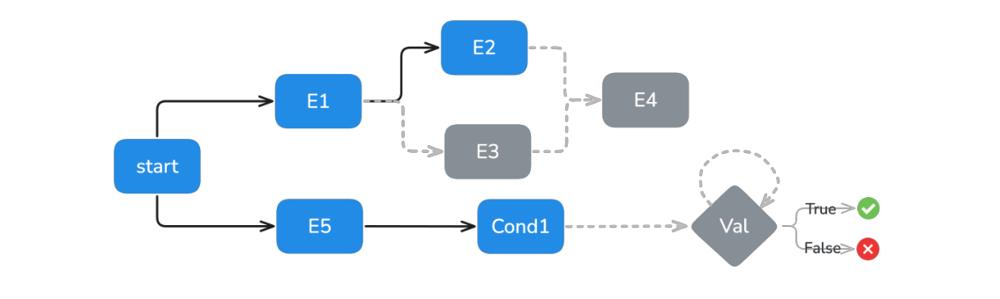
Figure 11: Event dependency graph illustrating ARE scheduling patterns. Events E1 and E5 exe- cute in parallel after simulation start, and E2/E3 executing in parallel after their prerequisites, both need to be executed for E4 to execute. Conditional execution is shown through Cond1 leading to validation (Val) with true/false outcomes.
messages are notified), medium (emails, messages and calendar events are notified), and high (everything is notified), creating a graduated spectrum of environmental observability.
消息会通知）、medium（电子邮件、消息与日历事件会通知）、high（全部通知），由此形成环境可观测性的梯度光谱。
Notifications and agent proactivity Notifications are not the only way for agents to observe envi- ronment changes. For example, even if the notification policy doesn’t alert the agent when messages arrive from contacts, the agent can still proactively check for new messages by browsing the user’s inbox. Notifications add realism and complexity to environments, potentially creating different agent behaviors based on whether the environment is notification-rich or notification-poor. This system enables researchers to tackle new capabilities such as proactivity.
通知与智能体主动性 通知并非智能体观测环境变化的唯一途径。例如，即便通知策略不在联系人消息到达时提醒智能体，智能体仍可通过浏览用户收件箱主动检查新消息。通知为环境增添真实感与复杂度，可能使智能体在通知丰富与通知贫乏的环境中表现迥异。这一系统让研究者得以探索主动性等新能力。
A.1.5 SCENARIOSA.1.5 场景
ARE shifts from static, single-turn tasks to dynamic scenarios. Scenarios attempt to capture real- world complexity through temporal dynamics, events, and multi-turn interactions. This enables eval- uation of agent capabilities that cannot be assessed through traditional request-response paradigms. In practice, scenarios are implemented in a scenario.py containing the apps, scheduled events, and arbitrary verification logic.
ARE 从静态的单轮任务转向动态场景：场景借助时间动态、事件与多轮交互来刻画真实世界的复杂性，使评测传统请求-响应范式无法覆盖的智能体能力成为可能。实践中，场景在 scenario.py 中实现，内含 app、定时事件与任意验证逻辑。
Scenario runtime Scenarios typically start with an environment instance and a send message to agent tool call, waking the agent up. The environment operates on discrete time steps, executing scheduled events and managing state transitions until the agent reaches an exit condition, see Figure 11. All interactions with the user are through the AgentUserInterface, with verification triggered upon task completion.
场景运行时 场景通常以一个环境实例和一次 send message to agent 工具调用开始，以此唤醒智能体。环境按离散时间步运行，执行定时事件并管理状态转移，直至智能体达到退出条件（见图 11）。与用户的全部交互都经由 AgentUserInterface 进行，任务完成时触发验证。
Scenario example Consider this two-turn scenario (see Figure 2 and Figure 12): a user asks the agent via AgentUserInterface “Can you ask my mom to send me our family streaming pass- word?”. The agent is initialized from this first notification, starts checking messages, and requests the password in the Chats app; the tool calls modify the Chats app state and are recorded in the EventLog. The agent confirms to user that the request was sent, after which the environment pauses execution and applies first-turn validation.
场景示例 以这个两回合场景为例（见图 2 与图 12）：用户通过 AgentUserInterface 请求智能体“能让我妈妈把我们的家庭流媒体密码发给我吗？”。智能体从这条首条通知初始化，开始检查消息，并在 Chats 应用中索要密码；这些工具调用修改了 Chats 应用状态，并被记录到 EventLog。智能体向用户确认请求已发出，随后环境暂停执行，执行第一回合验证。
At turn two, the user asks a follow up question: “As soon as I receive the password from my mother, transfer it to my father”. The agent resumes upon the send message to agent notification, and looks for the mother’s reply in the Chats app (where it previously requested it). In the meantime, a scheduled environment event is triggered and an Email from the mother containing the code is received. The agent reacts to this email notification by stopping searching the Chats app, processes the Email, extracts the code, forward it to the father, and report success to the user. Final verification reviews the complete interaction in the EventLog, and the environment issues a termination signal to end execution.
第二回合，用户提出后续请求：“我一收到妈妈发来的密码，就转交给我爸爸”。智能体在 send message to agent 通知到来时恢复运行，并在 Chats 应用（此前索要密码之处）中查找妈妈的回复。与此同时，一个定时环境事件被触发：一封来自妈妈、内含密码的电子邮件送达。智能体响应这封邮件通知，停止在 Chats 应用中搜索，转而处理邮件、提取密码、转发给爸爸，并向用户报告成功。最终验证在 EventLog 中审查完整交互，随后环境发出终止信号，结束执行。
Published as a conference paper at ICLR 2026
ICLR 2026 会议论文
A.2 NOTIFICATION POLICIES IN AREA.2 ARE 中的通知策略
The notification system in ARE follows a configurable policy where researchers can choose which Env events are notified to the Agent. The Mobile environment pre-defines three notification poli- cies with different levels of verbosity, which we describe in detail in Table 4. Note that messages sent by the user via send message to agent are systematically notified to the agent, regardless of the verbosity level.
ARE 的通知系统遵循可配置的策略：研究者可自行选择哪些 Env 事件通知给智能体。Mobile 环境预定义了三种详细程度不同的通知策略，详见表 4。注意，用户经 send message to agent 发送的消息无论如何都会通知给智能体，不受详细程度级别影响。
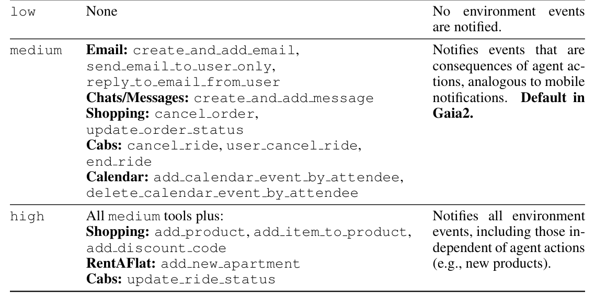
Table 4: Pre-set notification policies in Mobile (Compressed). Verbosity Notified Environment Tools Description
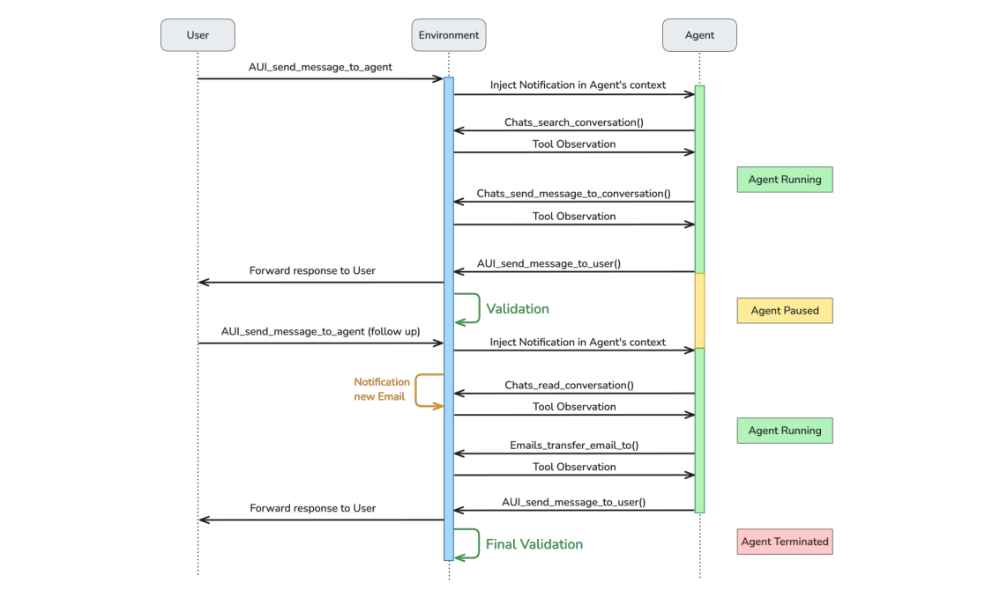
Figure 12: Sequence diagram of a multi-turn scenario in ARE. The agent is paused between turns, i.e., between calling send message to user and receiving send message to agent , and adapts its strategy in response to an asynchronous notification from the environment, a new email.
Published as a conference paper at ICLR 2026
ICLR 2026 会议论文
A.3 UNIVERSE GENERATIONA.3 Universe 生成
Dependency management & consistency To ensure cross-app coherence, we implement a struc- tured dependency resolution system. During generation, each app queries the existing universe state to maintain consistency—for example, when generating emails, the system first retrieves all available contacts to ensure referenced individuals exist in the Contacts app. Similarly, calendar events that mention other people are validated against the contact list, and ride history in the Cabs app references locations that align with the user’s established geographic context.
依赖管理与一致性 为保证跨应用一致性，我们实现了结构化的依赖解析系统。生成期间，每个 app 都会查询现有 universe 状态以维持一致性——例如生成电子邮件时，系统先检索全部可用联系人，确保被提及的人确实存在于 Contacts 应用中。类似地，提及他人的日历事件会对照联系人列表校验；Cabs 应用中的行程历史所引用的位置也与用户既有的地理环境保持一致。
We handle dependency conflicts through a priority-based resolution system where foundational apps (e.g., Contacts) take precedence over dependent apps (e.g., Messages, Emails) as show in Figure 13.
依赖冲突通过基于优先级的解析系统处理：基础性 app（如 Contacts）优先于依赖性 app（如 Messages、Emails），如图 13 所示。
However, several complex inter-app dependencies remain unhandled in our current implementation. These include temporal consistency across apps (ensuring message timestamps align with calendar availability), semantic relationship tracking (maintaining consistent relationship dynamics between contacts across different communication channels), and cross-modal content references (ensuring photos mentioned in messages exist in the file system). Addressing these limitations represents important future work for achieving fully coherent synthetic Mobile environments.
但在当前实现中，若干复杂的跨应用依赖仍未处理，包括：跨应用的时间一致性（确保消息时间戳与日历可用性对齐）、语义关系跟踪（在不同通信渠道间保持联系人关系动态的一致）以及跨模态内容引用（确保消息中提到的照片确实存在于文件系统）。解决这些局限是实现完全自洽的合成 Mobile 环境的重要后续工作。
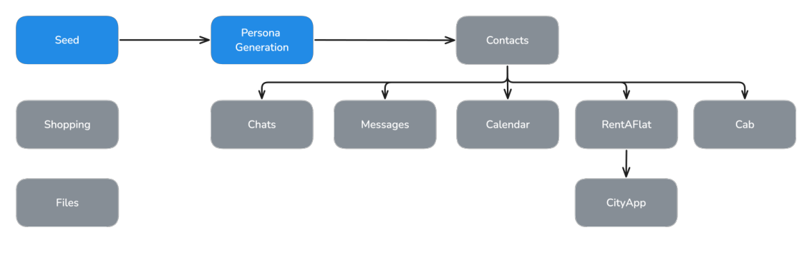
Figure 13: The dependency graph of Mobile apps. Shopping and File system are independent apps. Contacts is the root for rest of the apps.
Contacts We populate contacts using personas as the foundation. To begin, we sample seed per- sonas from the persona hub Ge et al. (2024). However, these personas are brief and lack grounding in the universe’s location. To address this, we expand and contextualize them by incorporating the universe location into the prompt. We sample a user persona from the generated contacts which serves as the basis for populating the rest of the universe. A universe is based on a user persona.
联系人 我们以 persona 为基础填充联系人。首先从 persona hub（Ge et al. (2024)）采样种子 persona；但这些 persona 过于简略，且与 universe 的所在位置缺乏关联。为此，我们把 universe 位置纳入提示词，对 persona 进行扩展并补充语境。随后从生成的联系人中采样一个用户 persona，作为填充 universe 其余部分的基础。每个 universe 都以一个用户 persona 为根基。
An example user persona is:一个用户 persona 的示例如下：
"first_name": "Helena", "last_name": "Mueller", "gender": "Female", "age": 43, "nationality": "German", "city_living": "Berlin", "job": "Marketing Manager", "description": "Helena Mueller is a vibrant and energetic 43-year-old marketing manage living in Berlin, Germany.", "phone": "+49 157 6543210", "email": "helena.mueller@gai2mail.com" }
{"first_name": "Helena", "last_name": "Mueller", "gender": "Female", "age": 43, "nationality": "German", "city_living": "Berlin", "job": "Marketing Manager", "description": "Helena Mueller is a vibrant and energetic 43-year-old marketing manage living in Berlin, Germany.", "phone": "+49 157 6543210", "email": "helena.mueller@gai2mail.com" }
Chats & Messages In Chats & Messages apps, we generate both group conversations and indi- vidual chats. We sample contacts between whom we have to generate the conversations. Then, we
Chats 与 Messages 在 Chats 与 Messages 应用中，我们既生成群聊对话，也生成单独聊天。我们先采样需要在其间生成对话的联系人，然后
Published as a conference paper at ICLR 2026
ICLR 2026 会议论文
provide the participants personas and prompt the model to generate a conversation with at least 10 messages alternating between participants. We prompt the model to generate conversations that are natural and reflect the participants’ backgrounds and also ask it to include references to possible shared experiences, interests, or cultural elements.
我们将参与者 persona 提供给模型，提示其生成至少含 10 条消息、在参与者之间交替往来的对话。我们要求对话自然、能反映参与者的背景，并让模型在对话中加入对可能的共同经历、兴趣或文化元素的指涉。
Emails Similar to messages, we prompt the LLM to generate both ‘inbox’ and ‘sent’ emails. For inbox emails, the sender is sampled from the contact list, while for sent emails, the recipients are selected. We provide the LLM with the user’s persona and the sampled non-user persona to gen- erate the emails. We specifically prompt the LLM to analyze details such as age, gender, cultural background, occupation, education level, personality traits, communication style, current life cir- cumstances, relationships and social networks, as well as interests and hobbies, and come up with a valid reason for writing the email.
电子邮件 与消息类似，我们提示 LLM 同时生成“收件箱”与“已发送”邮件：收件邮件的发件人从联系人列表中采样，发件邮件则选定收件人。我们向 LLM 提供用户 persona 与采样所得的非用户 persona 来生成邮件，并特别提示其分析年龄、性别、文化背景、职业、教育水平、性格特质、沟通风格、当前生活状况、人际关系与社交网络以及兴趣和爱好等细节，为撰写邮件构想一个合理的缘由。
Calendar We provide the LLM with the user persona and a summary of the previous week, prompting it to generate calendar events for the current week. Next, we use these newly gener- ated events to prompt the LLM to create a weekly summary. This process is repeated iteratively to populate the calendar over a specified timeframe, such as three months.
日历 我们向 LLM 提供用户 persona 与上一周的摘要，提示其生成当前周的日历事件；随后再用这些新生成的事件提示 LLM 生成一周摘要。如此迭代往复，即可在指定时间范围（如三个月）内填充整个日历。
RentAFlat & City For apartment listings, we provide the universe countries and prompt the LLM to generate apartment listings. The City app is designed to retrieve crime rates for specific zip codes. Using the zip codes generated for apartment listings, we prompt the LLM to produce crime rate data as a floating-point value in the range of 1–100.
RentAFlat 与 City 对于公寓房源，我们向 LLM 提供 universe 所在国家并提示其生成房源信息。City 应用用于查询特定邮政编码的犯罪率：利用房源所用的邮政编码，我们提示 LLM 生成 1–100 范围内的浮点值犯罪率数据。
Shopping For the Shopping app, we integrate publicly available Amazon product dataset. For each universe, we sample 500 products and generate discount codes applicable to select items.
购物 Shopping 应用整合了公开的 Amazon 商品数据集：每个 universe 采样 500 个商品，并生成适用于部分商品的折扣码。
Cabs We prompt the LLM with the user country information and generate the user’s ride history.
出租车 我们向 LLM 提供用户所在国家信息，据此生成用户的行程历史。
Files We employ a traditional file system hierarchy, loading it with publicly available Wikipedia data, datasets, and images. Additionally, we also add our files that do not contain personal informa- tion. We choose to keep the file system the same for all universes.
文件 我们采用传统文件系统层级，加载公开的 Wikipedia 数据、数据集与图像，并加入我们自有的、不含个人信息的文件。所有 universe 的文件系统保持一致。
A.4 ARE GRAPHICAL USER INTERFACEA.4 ARE 图形用户界面
Running scenarios with ARE generates rich agent execution traces that include reasoning steps, tool calls, their outputs, notifications, and, on the environment side, temporal event flows that unfold over simulated time periods. It is important for practitioners to be able to debug these interactions, whose complexity requires specialized tooling. Existing development tools largely fall into one of these categories: interactive debugging platforms (Epperson et al., 2025; Rorseth et al., 2025; Pang et al., 2025) and data annotation/curation platforms, each with distinct UI approaches. Com- mercial observability tools such as Arize Phoenix3 and Langfuse4 primarily offer visual timeline views and trace/span visualizations to help developers analyze agent execution, focusing on under- standing behavior after the fact rather than direct interaction or editing. Academic prototypes such as AGDebugger (Epperson et al., 2025) and LADYBUG (Rorseth et al., 2025) provide interactive debugging with user interfaces that enable browsing conversation histories, editing messages, and tracing execution steps, while Hippo (Pang et al., 2025) uses an interactive tree to visualize and control chain-of-thought reasoning without focusing on tool calls, agentic behavior nor annotations.
用 ARE 运行场景会生成丰富的智能体执行轨迹，包括推理步骤、工具调用及其输出、通知，以及环境一侧随模拟时间展开的事件流。从业者需要能够调试这些交互，而其复杂性需要专门工具。现有开发工具大致分两类：交互式调试平台（Epperson et al., 2025; Rorseth et al., 2025; Pang et al., 2025）与数据标注/整理平台，二者 UI 路线各异。Arize Phoenix 与 Langfuse 等商业可观测性工具主要提供可视化时间线与 trace/span 视图，帮助开发者分析智能体执行，侧重事后理解行为而非直接交互或编辑。AGDebugger（Epperson et al., 2025）与 LADYBUG（Rorseth et al., 2025）等学术原型提供交互式调试：界面支持浏览对话历史、编辑消息、追踪执行步骤；Hippo（Pang et al., 2025）则以交互式树可视化并控制思维链推理，但不涉及工具调用、智能体行为与标注。
Although there are many specialized tools for data annotation, such as commercial platforms like Labelbox 5, they mainly focus on simplifying human-in-the-loop annotation. These tools offer fea- tures like multimodal chat editors and customizable worksheet UIs, enabling data labelers to refine trajectories from interactive LLM sessions. Despite their power for data collection and curation, a significant gap remains: They are designed to annotate traces of interactions and lack key points for reproducibility and broad evaluation: 1) They annotate full multi-turn conversations, when we want to gather tasks, environment events, and agent task success criteria; 2) they lack structured
数据标注领域也有众多专门工具，如 Labelbox 等商业平台，但它们主要聚焦于简化人在环标注：提供多模态聊天编辑器、可定制工作表 UI 等功能，让数据标注员能精修交互式 LLM 会话产生的轨迹。尽管在数据收集与整理上功能强大，它们与我们的需求之间仍有显著缺口：这类工具为标注交互轨迹而设计，缺少可复现性与大规模评测所需的关键能力——1）它们标注完整的多轮对话，而我们需要收集的是任务、环境事件与任务成功标准；2）它们缺乏结构化的
Published as a conference paper at ICLR 2026
ICLR 2026 会议论文
annotations within a fully simulated and reproducible environment, which is key to capturing both agent interaction with tools and external events, for realistic, reproducible agent traces.
在完全模拟且可复现环境中的标注——而这正是同时捕捉智能体与工具的交互及外部事件、获得真实且可复现智能体轨迹的关键。
To address this, we propose a single ARE Graphical User Interface (UI), a web-based platform that enables developers to interact with the environment, visualize scenarios (see Figure 14), and understand agent behavior and failures through detailed trace analysis and replay capabilities, and enable zero-code scenario annotation.
为解决这一问题，我们提出统一的 ARE 图形用户界面（UI）：一个基于 web 的平台，开发者可在其中与环境交互、可视化场景（见图 14），通过细致的轨迹分析与回放能力理解智能体的行为与失败原因，并实现零代码场景标注。
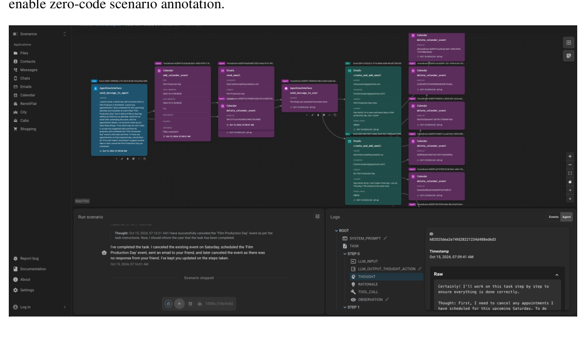
Figure 14: ARE scenario view with event DAG (top), scenario run (bottom left) and agent logs (bottom right).
A.4.1 ENVIRONMENT EXPLORATIONA.4.1 环境探索
Easily exploring the environment is crucial for understanding the context available to agents when debugging scenarios execution, and annotating new verifiable scenarios. The UI provides a com- prehensive visualization of the simulated environment, displaying all available apps/tools and their current states. Interactive app views allow users to browse app contents and interact with their tools, e.g. email inboxes in Mobile, in real-time. Views are automatically generated for new apps, which therefore doesn’t require a UI rewrite.
轻松探索环境至关重要：无论调试场景执行、还是标注新的可验证场景，都需要理解智能体可用的上下文。UI 提供模拟环境的全面可视化，展示所有可用的 app/工具及其当前状态；交互式 app 视图允许用户实时浏览应用内容并调用其工具，例如 Mobile 中的电子邮件收件箱。视图为新 app 自动生成，因此无需重写 UI。
A.4.2 AGENT TRACE VISUALIZATION AND REPLAYA.4.2 智能体轨迹可视化与回放
The UI presents agent multi-step interaction traces in a structured timeline view that clearly delin- eates agent thoughts, actions, and tool responses. Each trace element is timestamped and catego- rized, allowing users to follow the agent’s reasoning process, similar to the Phoenix6 trace views also used by smolagents7, but extended with debugging capabilities. Developers can roll back time by jumping back to a past event, editing thought, tool call, etc., from that step and replaying the scenario to see what would happen with a slightly different approach, similar to setting breakpoints and stepping through code in a standard code debugger.
UI 以结构化时间线视图呈现智能体的多步交互轨迹，清晰划分智能体的思考、动作与工具响应。每个轨迹元素都带时间戳并归类，用户可以循着智能体的推理过程查看，类似 Phoenix 的 trace 视图（smolagents 亦采用），但额外扩展了调试能力。开发者可以跳回某个历史事件以回溯时间，从该步骤起编辑思考、工具调用等内容，再重放场景，观察稍有差异的做法会带来什么结果——类似于在标准代码调试器中设置断点并单步执行。
A.4.3 SCENARIO VISUALIZATIONA.4.3 场景可视化
The UI provides interactive visualization of scenarios and their event DAGs introduced in Section 3, showing how scenario events are interconnected, and their execution status in real-time. The event graph visualization supports both scenario development and execution analysis. Before running a scenario, users can examine event triggers, dependencies, and timing constraints of the scenario.
UI 提供对场景及其事件 DAG（见第 3 节）的交互式可视化：既展示场景事件之间的关联，也实时显示其执行状态。事件图可视化同时服务于场景开发与执行分析。运行场景之前，用户可检视事件的触发器、依赖关系与时间约束。
Published as a conference paper at ICLR 2026
ICLR 2026 会议论文
During execution of a scenario by an agent, the interface highlights completed events and shows the progression through the dependency graph. Developers can run through the scenario with a given agent, see how it behaves and debug the scenario or the agent (see Figure 14). ARE is able to simulate time progression, so users can decide to jump in time for scenarios that span long time frames (e.g. weeks, months).
智能体执行场景期间，界面会高亮已完成的事件，并显示其在依赖图中的推进情况。开发者可以让给定智能体跑通整个场景，观察其行为，进而调试场景或智能体（见图 14）。ARE 能模拟时间推进，因此在跨度较长（如数周、数月）的场景中，用户可自主决定进行时间跳跃。
A.4.4 ANNOTATION INTERFACEA.4.4 标注界面
Beyond visualization, the UI includes an annotation interface – not released at this time – that significantly reduces the cost of scenario creation and QA. This includes a graph editor that allows to easily build a scenario event DAG. For each node, the annotator can configure tool calls, the node’s parents, and optionally timing. For example, to create a Mobile scenario, the annotator adds nodes representing a user initial ask (e.g. “email my travel plans”), oracle action solving the task (e.g. “agent sent an email”), environment events that will interfere with the agent’s work (e.g. “received an email from travel agent”), and potentially further turns. To ensure quality and consistency across annotations, we incorporate automated checks of the created events DAG. These checks detect and flag logical inconsistencies in event flows to annotators, such as a node without parents or contradictory node timings. The annotation interface achieves an approximate five times improvement in annotation time for Mobile scenarios, compared to manual approaches.
除可视化外，UI 还内置标注界面（暂未发布），可显著降低场景创建与质检的成本。其中包括图编辑器，可轻松构建场景事件 DAG：对每个节点，标注者可配置工具调用、父节点以及可选的时间。例如创建 Mobile 场景时，标注者会添加如下节点——用户初始请求（如“把我的旅行计划发邮件给我”）、解决任务的 oracle 动作（如“智能体发送了一封邮件”）、干扰智能体工作的环境事件（如“收到旅行社的邮件”），以及可能的后续回合。为确保标注的质量与一致性，系统对所创建的事件 DAG 进行自动化检查，检测并向标注者标记事件流中的逻辑不一致，例如无父节点的孤立节点或相互矛盾的节点时间。与人工方式相比，标注界面使 Mobile 场景的标注耗时缩短约 5 倍。
Published as a conference paper at ICLR 2026
ICLR 2026 会议论文
BGAIA2 APPENDIXB GAIA2 附录
B.1 DETAILS OF GAIA2 ANNOTATIONB.1 Gaia2 标注细节
B.1.1 ANNOTATION GUARDRAILSB.1.1 标注防护栏
To streamline the process and further reduce annotation errors, we implement structural constraints directly within the ARE UI (refer to Appendix A.4 for details). The system raises real-time errors when these are violated:
为简化流程并进一步减少标注错误，我们在 ARE UI 中直接实现结构约束（详见附录 A.4）。一旦违反，系统会实时报错：
• Only send message to agent or Env events may follow send message to user .
• 在 send message to user 之后，只允许出现 send message to agent 或 Env 事件。
• The event DAG must be fully connected, with send message to agent as the root. No event (Env or Agent Oracle) may be orphaned.
• 事件 DAG 必须完全连通，且以 send message to agent 为根；任何事件（Env 或 Agent Oracle）都不得孤立存在。
• Only one branch in the event DAG may include send message to agent or send message to user events.
• 事件 DAG 中只允许一个分支包含 send message to agent 或 send message to user 事件。
• A turn must always end with send message to user , both in terms of DAG structure and timeline ordering.
• 每个回合都必须以 send message to user 结束——无论就 DAG 结构还是时间线排序而言。
B.1.2 SCENARIO EXAMPLESB.1.2 场景示例
To build Gaia2, we define a set of capabilities that we believe are necessary – though not sufficient – for general purpose agents. As introduced above, each of the 800 scenarios is built to emphasize at least one of these capabilities, yielding 160 scenarios per capability split. We provide example scenarios displayed in the ARE GUI graph editor in Appendix B.1.3.
为构建 Gaia2，我们定义了一组对通用智能体必要（尽管不充分）的能力。如前所述，800 个场景中每一个都至少侧重其中一种能力，每个能力 split 各含 160 个场景。附录 B.1.3 展示了 ARE GUI 图编辑器中的示例场景。
Execution scenarios require the agent to take multiple write actions, which may need to be exe- cuted in a particular order. Most of the time, read actions are needed in order to gather information for properly filling write action arguments.
Execution 场景要求智能体执行多个写动作，且这些动作可能必须按特定顺序执行。多数情况下，智能体还需先执行读动作收集信息，才能正确填写写动作的参数。
Execution TaskExecution 任务
Task: Update all my contacts aged 24 or younger to be one year older than they are currently.
任务：将我所有 24 岁及以下的联系人年龄更新为比当前大一岁。
Explanation: This task requires the agent to read contact information, filter based on age criteria, and execute multiple write to update Contacts data.
说明：该任务要求智能体先读取联系人信息、按年龄条件过滤，再执行多次写操作更新 Contacts 数据。
Search scenarios require the agent to take multiple read actions in order to gather facts from different sources within the environment. Any sequence of read operations leading to the correct answer is considered successful as long as the answer is communicated via send message to user before scenario timeout. While conceptually similar to the original GAIA benchmark’s web search tasks, Gaia2 search scenarios operate within a controlled ARE en- vironment.
Search 场景要求智能体执行多个读动作，从环境内的不同来源收集事实。只要答案在场景超时前经 send message to user 传出，任何能导出正确答案的读操作序列均视为成功。Search 场景在概念上与原始 GAIA 基准的网页搜索任务相近，但运行于受控的 ARE 环境之中。
Search TaskSearch 任务
Task: Which city do most of my friends live in? I consider any contact who I have at least one 1-on-1 conversation with on Chats a friend. In case of a tie, return the first city alphabetically.
任务：我的大多数朋友住在哪个城市？凡在 Chats 上与我至少有过一次一对一对话的联系人，我都视为朋友；若出现并列，返回按字母序最靠前的城市。
Explanation: This scenario requires the agent to cross-reference data from multiple apps (Contacts and Chats), perform aggregation operations, and handle edge cases like ties.
说明：该场景要求智能体交叉引用多个应用（Contacts 与 Chats）的数据，执行聚合操作，并处理并列等边界情况。
All remaining capabilities tested in Gaia2 reflect tasks with a balanced number of required read and write operations. However, each capability features an additional challenge. Namely:
Gaia2 考察的其余能力对应读写操作数量均衡的任务，但每种能力都叠加了一项额外挑战，分别是：
Ambiguity scenarios reflect user tasks that are impossible, contradictory, or have multiple valid answers, with negative consequences arising during interaction if agents make mistakes. These scenarios test agents’ ability to recognize these issues and seek appropriate clarification from users.
Ambiguity 场景对应不可能完成、自相矛盾或存在多个有效答案的用户任务；若智能体处理不当，交互过程中将产生负面后果。这类场景考察智能体识别此类问题并向用户寻求恰当澄清的能力。
Published as a conference paper at ICLR 2026
ICLR 2026 会议论文
Ambiguity TaskAmbiguity 任务
Task: Schedule a 1h Yoga event each day at 6:00 PM from October 16, 2024 to October 21, 2024. Ask me in case there are conflicts.
任务：从 2024 年 10 月 16 日至 10 月 21 日，每天下午 6:00 安排一个时长 1 小时的瑜伽日程；如有冲突请询问我。
Explanation: While this task appears straightforward, current models often struggle to identify con- tradictions or multiple valid interpretations, tending to execute the first seemingly valid approach rather than recognizing the need for clarification.
说明：任务看似直白，当前模型却往往难以识别其中的矛盾或多种有效解释，倾向于径直执行第一个看似可行的方案，而意识不到需要澄清。
Adaptability scenarios require the agent to dynamically adapt to environmental changes that are consequences of previous agent actions, such as a response to an email sent by the agent, or the cancellation of a ride booked by the agent. These events require agents to recognize when adaptation is necessary and adjust their strategy accordingly.
Adaptability 场景要求智能体动态适应由自身先前动作引发的环境变化，例如所发邮件收到回复、所订行程被取消等。此类事件要求智能体识别何时需要调整，并相应改变策略。
Adaptability TaskAdaptability 任务
Task: I have to meet my friend Kaida Sch¨onberger to view a property with her [...] If she replies to suggest another property or time, please replace it with the listing she actually wants and reschedule at the time that works for her.
任务：我要与朋友 Kaida Sch¨onberger 会面，一同看一处房产 [...] 如果她回复建议换另一处房产或另一个时间，请按她实际想要的房源更换，并改约到她方便的时间。
Explanation: This task requires the agent to execute an initial plan while monitoring for environ- mental changes (the friend’s response), then adapt the plan based on new information. The agent must demonstrate flexibility in execution while maintaining task objectives.
说明：该任务要求智能体在执行初始计划的同时监测环境变化（朋友的回复），再依据新信息调整计划；智能体须在坚持任务目标的同时展现执行上的灵活性。
Time scenarios require agents to execute actions in due time, monitor and respond to events, and maintain awareness of temporal relationships throughout task execution. The duration of Time scenarios is currently capped at 5 minutes to facilitate annotation and evaluation.
Time 场景要求智能体按时执行动作、监测并响应事件，并在任务执行全程保持时间关系意识。为便于标注与评测，Time 场景的时长目前上限为 5 分钟。
Time TaskTime 任务
Task: Send individual Chats messages to the colleagues I am supposed to meet today, asking who is supposed to order the cab. If after 3 minutes there is no response, order a default cab from [...].
任务：向我今天要见的同事逐一发送 Chats 消息，询问该由谁叫车；若 3 分钟后仍无回应，则从 [...] 叫一辆默认的车。
Explanation: This scenario requires the agent to understand temporal constraints (the 3-minute win- dow), monitor for events (new messages from colleagues), and execute a time-sensitive action (order a cab).
说明：该场景要求智能体理解时间约束（3 分钟窗口）、监测事件（同事的新消息），并执行时间敏感动作（叫车）。
Agent2Agent scenarios replace apps with app-agents. Main-agents can no longer access app tools directly and must instead communicate with the app-agents in order to place tool calls, observe tool call outputs, and ultimately accomplish user tasks. This transformation requires agents to develop robust collaboration capabilities, including sub-task setting, affordance understanding, “context- sharing,” and general coordination. By default, agents and app sub-agents are instantiated with the same scaffold and model, with good performance requiring strong sub-goal setting and sub-goal solving. However, Gaia2 also supports heterogeneous multi-agent evaluations, i.e. where stronger agents supervise weaker sub-agents or vice-versa.
Agent2Agent 场景用应用智能体取代应用：主智能体无法再直接访问应用工具，必须与应用智能体通信，才能发起工具调用、观察工具输出并最终完成用户任务。这一转变要求智能体具备稳健的协作能力，包括子任务设定、可供性理解、“上下文共享”与一般性协调。默认情况下，智能体与应用子智能体以相同的 scaffold 与模型实例化，良好表现依赖于强大的子目标设定与子目标求解。此外，Gaia2 也支持异构多智能体评测——由更强的智能体监督较弱的子智能体，或反之。
• Example: Same Search task as above but the Contacts and Chats apps are replaced by app sub-agents and the main agent must communicate with them in order to gather information.
• 示例：与上文相同的 Search 任务，但 Contacts 与 Chats 应用被应用子智能体取代，主智能体必须与它们通信才能收集信息。
Noise scenarios require robustness to environment noise, simulating the inherent instability of real- world systems, where APIs change, services become temporarily unavailable, and environmental conditions shift during task execution. This category applies systematic perturbations to Gaia2 scenarios, including tool signature modifications, random failure probabilities, and dynamic en- vironment events that are irrelevant to the task. We assess the sanity of our noise mechanisms in Appendix B.5.2.
Noise 场景考察对环境噪声的鲁棒性，模拟真实世界系统固有的不稳定性：API 会变更、服务会临时不可用、环境条件会在任务执行期间波动。该类别对 Gaia2 场景施加系统性扰动，包括工具签名修改、随机失败概率以及与任务无关的动态环境事件。噪声机制的合理性检验见附录 B.5.2。
• Example: Same Adaptability task as above but with random tool execution errors and ran- dom environment events (e.g., messages from other people) occurring during execution.
• 示例：与上文相同的 Adaptability 任务，但执行期间会随机出现工具执行错误与随机环境事件（如来自他人的消息）。
Published as a conference paper at ICLR 2026
ICLR 2026 会议论文
B.1.3 CAPABILITY-SPECIFIC ANNOTATION GUIDELINESB.1.3 各能力的标注指南
In our guidelines for each capability (especially Ambiguity and Adaptability), we put strong empha- sis on precise task specifications, while also acknowledging the challenge of maintaining realism and avoiding prompts that inadvertently disclose the solution.
在针对各能力（尤其是 Ambiguity 与 Adaptability）的标注指南中，我们高度重视任务的精确规定，同时也直面两大挑战：保持任务的真实感，以及避免提示词无意间泄露解法。
Search: Scenarios contain only one write action, which is the agent’s final answer to the user’s question, derived from multiple read actions. Answers must be concise, easily verifiable, and avoid complex computation.
Search：场景仅含一个写动作，即智能体在多次读动作基础上给出的最终答案。答案必须简洁、易于验证，且避免复杂计算。
Ambiguity: Scenarios that are impossible, contradictory, or inherently ambiguous. The agent is expected to complete unambiguous steps, then inform the user of the ambiguity or impossibility. These scenarios are single-turn: they do not include a clarification message from the User.
Ambiguity：不可能完成、自相矛盾或天然含糊的场景。智能体应先完成无歧义的步骤，再向用户指出歧义或不可行之处。这类场景为单回合设计：不包含用户的澄清消息。
The user prompt must clearly instruct the agent to detect and report ambiguities, as users often have varying preferences on how frequently and when this should occur.
用户提示词必须明确指示智能体检测并报告歧义——用户对报告歧义的频率与时机往往偏好各异。
Adaptability: Scenarios involve Env events that require the agent to revise its plan in response to delayed outcomes of its actions. In order to meet our modeling constraints, scenarios follow a consistent structure:
Adaptability：场景包含要求智能体根据自身动作的延迟结果修改计划的环境事件。为满足建模约束，场景遵循一致的结构：
1. The user provides a task. 2. The agent acts and sends a message using send message to user . 3. An Env event is triggered (e.g., email reply, order cancellation). It is a consequence of a previous agent’s action, with send message to user as parent. 4. The agent adapts accordingly.
1. 用户给出任务。2. 智能体行动，并经 send message to user 发送消息。3. 一个 Env 事件被触发（如邮件回复、订单取消）——它是智能体先前动作的后果，以 send message to user 为父节点。4. 智能体据此进行调整。
To increase the difficulty, distractor Env events are also included, aiming to mislead the agent into incorrect behavior.
为增加难度，场景中还包含干扰性 Env 事件，意在诱使智能体做出错误行为。
In order to perfectly specify expected agent behavior, the task states explicitly that the agent should send a message to the user after completing the initial requests (before the Env events). It should also specify what the Agent is allowed to do in the case of an Env event happening, without giving exact hints on what steps the Agent should take.
为完整规定智能体的预期行为，任务须明确：智能体应在完成初始请求后（Env 事件发生前）向用户发送消息；同时说明 Env 事件发生时允许智能体做什么，但不得给出智能体应采取步骤的确切提示。
Time: Scenarios assess Agent’s ability to act on time, therefore they all include at least one time- sensitive oracle action.
Time：场景评估智能体按时行动的能力，因此均包含至少一个时间敏感的 oracle 动作。
• Scenarios should be solvable within a five-minute window. • User prompts must instruct precise timing (e.g., ”after exactly 3 minutes”). • The verifier checks the timing of agent actions only if the oracle event has a relative time delay greater than 1 second.8 The agent’s mapped action must fall within [∆t−5sec, ∆t+ 25sec]. • Distractor Env events are also included.
• 场景应可在 5 分钟窗口内完成。• 用户提示词必须规定精确的时间（如“恰好 3 分钟后”）。• 仅当 oracle 事件的相对时间延迟大于 1 秒时，验证器才检查智能体动作的时间；智能体的映射动作必须落在 [∆t−5sec, ∆t+ 25sec] 之内。• 场景同样包含干扰性 Env 事件。
B.1.4 CAPABILITY TAXONOMIESB.1.4 能力分类体系
Taxonomy of ambiguity scenarios歧义场景的分类
• Impossible or contradictory tasks: missing key information (e.g., the User does not specify the ride pickup location), or requests incompatible with the Environment (e.g., asking to buy an out-of-stock item). • Blatant ambiguities or high-stakes consequences: Multiple valid answers exist, and the ambiguity is obvious or the user explicitly asks in a natural way to report ambiguities.
• 不可能或自相矛盾的任务：缺失关键信息（如用户未说明叫车上车地点），或请求与环境不兼容（如要求购买缺货商品）。• 明显的歧义或高风险后果：存在多个有效答案，且歧义显而易见，或用户以自然方式明确要求报告歧义。
Taxonomy of env events Env events are classified based on their dependency:
环境事件的分类 Env 事件按依赖关系分类：
• Independent events occur without agent action and have send message to agent as their only parent.
• 独立事件：无需智能体动作即可发生，其唯一父节点是 send message to agent。
Published as a conference paper at ICLR 2026
ICLR 2026 会议论文
• Dependent events result from prior agent actions and must have send message to user as their direct parent.
• 依赖事件：由智能体先前的动作引出，必须以 send message to user 为直接父节点。
Distractor events are designed to mimic relevant events and mislead the agent into incorrect behav- ior. By exception, distractor events may be independent but still have send message to user as a parent to preserve the structure of the scenario. In the Adaptability category, only dependent Env events are used.
干扰事件刻意模仿相关事件，以误导智能体做出错误行为。作为例外，干扰事件可以是独立事件，但仍以 send message to user 为父节点，以保持场景结构。在 Adaptability 类别中，仅使用依赖型 Env 事件。
Taxonomy of time scenarios Time scenarios require the agent to execute one or more actions at a specific point in time, either proactively (“For the next 5mins, send ‘Hi’ to John Doe every 30sec”) or in reaction to an independent Env event (“When this item becomes available, buy it immediately”), or in reaction to a dependent Env event (“Ask the invitees whether they come to the party tonight. Wait 1min for everyone to reply, then immediately send me the number of glass to buy, I am waiting in the line!”).
Time 场景的分类 Time 场景要求智能体在特定时间点执行一个或多个动作：可以是主动执行（“接下来 5 分钟，每 30 秒给 John Doe 发一条‘Hi’”），可以是对独立 Env 事件的响应（“该商品一上架就立即购买”），也可以是对依赖 Env 事件的响应（“问问受邀者今晚是否来派对。等 1 分钟让大家回复，然后立即把要买的杯子数量发给我，我正在排队！”）。
Taxonomy:分类：
• Time-based one-off task: Execute a task at a precise point in time in the future. Example: “Send a follow-up message to Jo in 2 minutes if she does not reply.” • Time-based recurrent task: Execute a recurrent task at precise points in time. Example: “For the next 4 minutes, every minute, delete the new emails I receive.” • Event-based one-off task: Execute a one-time task conditionally on a future trigger event. Example: “Purchase red running shoes as soon as they become available in size 6 for less than 100USD in the shopping app” • Event-based recurrent task: Automate a recurrent routine conditionally on future events. Example: “For the next 2 minutes, whenever I receive an email containing the keyword ’Black Friday’, immediately delete it. Do not talk to me in the next 2 minutes.”
• 基于时间的一次性任务：在未来的精确时间点执行任务。示例：“如果 Jo 在 2 分钟内没有回复，给她发一条跟进消息。” • 基于时间的周期性任务：在精确的时间点执行周期性任务。示例：“接下来 4 分钟，每分钟删除我收到的新邮件。” • 基于事件的一次性任务：以未来触发事件为条件执行一次性任务。示例：“在购物应用中，6 码红色跑鞋一上架且价格低于 100USD 就立即购买” • 基于事件的周期性任务：以未来事件为条件自动执行周期性例行任务。示例：“接下来 2 分钟，凡收到包含关键词‘Black Friday’的邮件就立即删除。这 2 分钟内不要和我说话。”
We encourage annotators to cover and combine all these types of tasks when creating Time scenar- ios.
我们鼓励标注者创建 Time 场景时覆盖并组合上述全部任务类型。
B.2 VERIFICATION DETAILSB.2 验证细节
B.2.1 VERIFICATION MECHANISMB.2.1 验证机制
We verify scenario successful completion by comparing agent actions with a ground truth, defined as the minimal sequence of write actions needed to solve a task. We exclude read actions from verification since multiple reading strategies can lead to the correct set of write actions. In a preliminary phase, the verifier checks that used tool names counters are identical in both the oracle actions and the agent’s write actions. If this test is successful, the verifier sorts the oracle actions in a topological order based on the oracle graph, which reflects their dependencies. Then, the verifier proceeds to mapping each oracle action to an agent action by checking:
我们通过将智能体动作与 ground truth——定义为解决任务所需的最小写动作序列——比对，来验证场景是否成功完成。读动作不参与验证，因为多种阅读策略都可能导向相同的正确写动作集合。预备阶段，验证器先检查 oracle 动作与智能体写动作所用的工具名称计数是否一致；通过后，验证器依据反映依赖关系的 oracle 图对 oracle 动作做拓扑排序，再通过以下检查将每个 oracle 动作映射到智能体动作：
• Consistency: the verifier tests whether the oracle action and the candidate agent’s action are equivalent. After conducting some preliminary tests (such as ensuring that both the oracle and agent actions use the same tool and that the oracle action is not already mapped to another agent action), the verifier performs:
• 一致性：验证器检验 oracle 动作与候选智能体动作是否等价。完成若干预备检查（如确保 oracle 与智能体动作使用同一工具、且该 oracle 动作尚未映射到其他智能体动作）之后，验证器执行：
– Hard check to compare action parameters that require exactness. For example, when
—— 硬检查：比较要求精确一致的动作参数。例如在
replying to an email, it verifies that email id value is identical for both actions, i.e. the agent replies to the correct email. – Soft check for parameters that require more flexible evaluation, such as the content
回复电子邮件时，验证器核对两个动作的 email id 值是否一致，即确认智能体回复的是正确的邮件。—— 软检查：针对需要更灵活评估的参数，例如电子邮件或消息的内容。
of an email or a message. To perform a soft check, an LLM judge is prompted with the user task as context, and the arguments from both the agent action and the oracle action as inputs. The LLM then determines if the actions are equivalent according to tool-specific guidelines. For example, emails verification includes guidelines to check their signatures. • Causality: crucially, oracle actions are organized within an oracle graph, whereas agent actions are collected from a trajectory and simply ordered by execution time. Therefore, we
执行软检查时，以用户任务为上下文、以智能体动作与 oracle 动作的参数为输入来提示 LLM 裁判，由 LLM 依据工具专属指南判断动作是否等价。例如，电子邮件验证包含检查签名的指南。• 因果性：关键在于，oracle 动作组织在 oracle 图中，而智能体动作从轨迹中收集、仅按执行时间排序。因此，我们
Published as a conference paper at ICLR 2026
ICLR 2026 会议论文
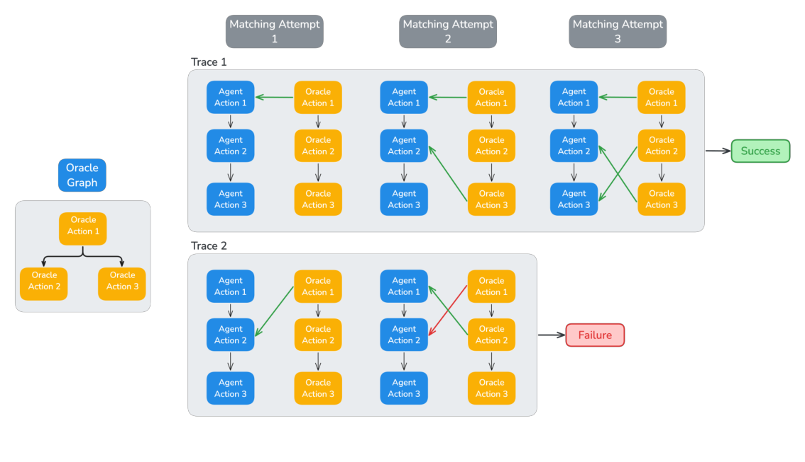
Figure 15: Illustration of a failure (top) and a success (down) of the matching trajectory process.
must ensure that the agent does not violate dependencies within this graph. For example, if both oracle actions A and B depend solely on action C, the agent is free to execute A and B in any order, as long as they are executed after C; i.e. sequences C-B-A or C-A-B are both acceptable. Once a match is found, the ARE Verifier ensures causality by verifying that all parent actions of the oracle action have already been matched with preceding agent actions. • Timing: scenarios can include a time delay for certain actions relative to their parent ac- tions, which the agent must respect. The verifier evaluates whether the agent’s timing falls within a specified tolerance window centered around the relative time of the oracle action. To determine the relative timing of the agent’s action, it is necessary to identify which agent action corresponds to the oracle’s parent action. This information is readily available due to the ARE Verifier’s process. Indeed, for a given oracle action, all its parent actions must be matched to an agent action before attempting to match the oracle action itself.
必须确保智能体不违反图中的依赖关系。例如，若 oracle 动作 A 与 B 都仅依赖于动作 C，则智能体可以任意顺序执行 A 与 B，只要二者都在 C 之后；即序列 C-B-A 或 C-A-B 均可接受。一旦找到匹配，ARE Verifier 会验证 oracle 动作的所有父动作均已与先前的智能体动作匹配，从而保证因果性。• 时序：场景可为某些动作设置相对其父动作的时间延迟，智能体必须遵守。验证器评估智能体的时序是否落在以 oracle 动作相对时间为中心的容差窗口内。要确定智能体动作的相对时序，须先识别哪个智能体动作对应 oracle 的父动作；得益于 ARE Verifier 的流程，这一信息唾手可得——对任一 oracle 动作，其所有父动作都必须先匹配到智能体动作，然后才会尝试匹配该 oracle 动作本身。
If all oracle actions are successfully matched, the verifier returns a success signal. Conversely, if any oracle action cannot be matched to an agent action, the verifier returns a failure signal, see Figure 15 for two examples. Crucially, the verifier implicitly assumes there are no equivalent write actions, i.e. user preferences are clearly stated with minimal ambiguity in the scenario tasks. For example, sending a message using the Messages app while the oracle action uses the Chat app will trigger a failure.
若所有 oracle 动作都成功匹配，验证器返回成功信号；反之，只要有一个 oracle 动作无法匹配到智能体动作，验证器即返回失败信号（两个示例见图 15）。至关重要的是，验证器隐含假设不存在等价的写动作——即场景任务中的用户偏好被清晰陈述、几乎无歧义。例如，oracle 动作用 Chat 应用发送消息，而智能体用 Messages 应用发送，就会触发失败。
While other verification methods (Patil et al., 2025; Yao et al., 2024) compare the environment ground truth and actual final states, verifying a sequence of write actions, which is equivalent to comparing ground truth and actual states after each write action of the sequence, provides more control. For example our verification allows to distinguish, e.g. for safety considerations, a Mobile trajectory where the agent adds an event at the wrong place and correct itself from a trajectory where the agent is correct at first try. Moreover, in Mobile, sequences of write actions are easier for humans to interpret and annotate, compared to diffs of states.
其他验证方法（Patil et al., 2025; Yao et al., 2024）比较环境 ground truth 与实际最终状态；而验证写动作序列——等价于在该序列的每个写动作之后比较 ground truth 与实际状态——能提供更精细的控制。例如，出于安全考虑，我们的验证可以区分“智能体先在错误位置添加事件、随后自我纠正”与“智能体一次到位”这两种 Mobile 轨迹。此外，在 Mobile 中，与状态差异相比，写动作序列对人类而言更易解释与标注。
B.2.2 VALIDATING MULTI-TURN SCENARIOSB.2.2 多回合场景的验证
Currently, we have only described how the verifier works in single-turn scenarios, where a user assigns a single task to an agent, and the agent completes it without further interaction. However, the Gaia2 benchmark also includes multi-turn scenarios that involve more complex interactions between the user and the agent. For example, consider scenarios related to the Adaptability capability, where the agent must adjust to external events. Multi-turn scenarios present two key challenges:
前文只描述了验证器在单回合场景中的工作方式：用户向智能体布置单个任务，智能体无需进一步交互即可完成。然而，Gaia2 还包含用户与智能体交互更复杂的多回合场景，例如与 Adaptability 能力相关、要求智能体适应外部事件的场景。多回合场景带来两个关键挑战：
Published as a conference paper at ICLR 2026
ICLR 2026 会议论文
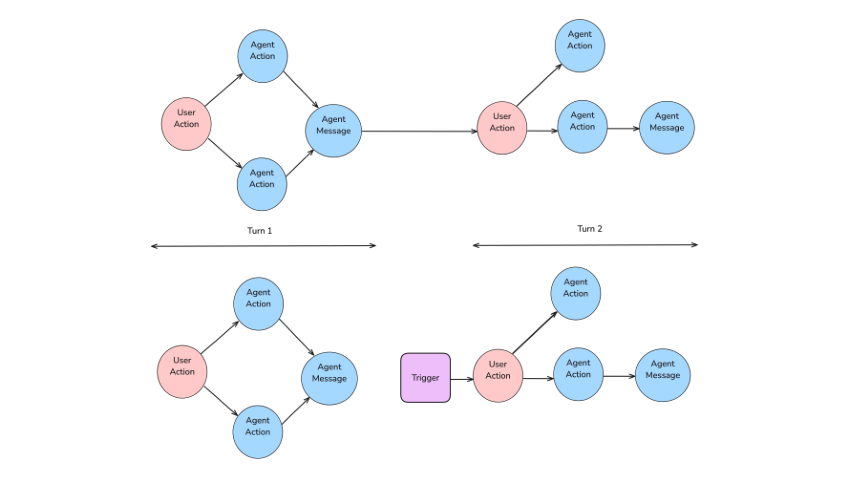
Figure 16: Insertion of a conditional trigger event in a multi-turn scenario.
• How can we validate multi-turn scenarios?
• 如何验证多回合场景？
• More importantly, how can we run an agent in a multi-turn scenario?
• 更重要的是：如何在多回合场景中运行智能体？
Indeed, annotators plan User and Env actions based on what should occur in previous turns accord- ing to the oracle action graph. However, when an agent is launched in a scenario, it may not adhere to the oracle’s actions, creating uncertainty about when to trigger user or environment actions.
标注者依据 oracle 动作图，按前几回合“应当发生什么”来规划 User 与 Env 动作。然而，智能体在场景中运行时未必遵循 oracle 动作，何时触发用户或环境动作便因此变得不确定。
Multi-turn verifier Answering the first question is relatively straightforward. It is sufficient to detect when the agent sends a message to the user to delimit the turns. We can then feed the verifier with each turn separately and accept the agent’s trajectory if all turns are successful. Note that this validation can be performed in an online fashion after each turn or in an offline fashion once the full trajectory is collected.
多回合验证器 回答第一个问题相对简单：只需检测智能体何时向用户发送消息以划分回合，再把每个回合分别送入验证器；若所有回合都成功，即接受智能体的轨迹。注意，该验证既可在每回合结束后在线执行，也可在收集完整轨迹后离线执行。
Multi-turn execution An efficient solution to run an agent in a multi-turn scenario is to call the ARE Verifier at the end of each turn and only trigger the next turn if the current turn was successful. This approach prevents running the agent when it has already diverged from the oracle path. Prac- tically, as illustrated in Figure 16, we modify the scenario event graph by splitting it into turns and inserting a conditional event to call the verifier and trigger the next turn. A simpler, but less efficient, solution is to trigger the next turn each time the agent calls send message to user , regardless of what the agent did in the current turn. This approach is used for scenarios from the test set since we do not have access to oracle actions and thus the ARE Verifier for them.
多回合执行 在多回合场景中运行智能体的高效方案是：每回合结束时调用 ARE Verifier，仅当当前回合成功时才触发下一回合，从而避免在智能体已偏离 oracle 路径后继续运行。实践中，如图 16 所示，我们把场景事件图按回合拆分，并插入一个条件事件来调用验证器、触发下一回合。另一方案更简单但效率较低：无论智能体在当前回合表现如何，只要其调用 send message to user 就触发下一回合。测试集场景即采用此方案——因为我们拿不到它们的 oracle 动作，也就无法对其使用 ARE Verifier。
B.2.3 VERIFIER HACKINGB.2.3 验证器投机
We conducted RL experiments in which we used the ARE Verifier as a reward function. During these experiments, we observed that the agent was able to exploit our initial version of the verifier in scenarios related to the Search capability, where only a single write action is expected for successful trajectories. In the observed exploit shown in Figure 17, the agent would learn to embed strings representing increasingly complex code in write tool calls. These outputs overwhelmed the LLM judge used for soft checks by the ARE Verifier, producing false positives. In follow-up experiments, we found that adding a task-agnostic “style” soft check to the verifier was effective at addressing this failure mode and preventing further reward hacking.
我们开展了以 ARE Verifier 作为奖励函数的 RL 实验，其间观察到智能体能够利用验证器的初始版本，尤其是在 Search 能力相关场景中——此类场景下成功轨迹只包含单个写动作。在图 17 所示的被利用案例中，智能体学会在写工具调用的参数里嵌入越来越复杂的代码字符串，这些输出压垮了 ARE Verifier 用于软检查的 LLM 裁判，造成假阳性。后续实验表明，在验证器中加入与任务无关的“style”软检查，能有效遏制这一失败模式并防止进一步的奖励投机。
B.2.4 VERIFYING THE VERIFIERB.2.4 验证验证器
Verifiers are critical components of training and evaluation pipelines, where false positive or false negative e.g. via hacking can result in flawed evaluations or collapsed trainings (cf. Appendix B.2.3). We evaluate the ARE Verifier by first deriving a series of “unit” tests from the oracle actions that the verifier should satisfy. Typically, we apply perturbations to oracle actions that we know preserve or invalidate the oracle trajectory validity, before submitting the oracle and perturbed oracle trajecto-
验证器是训练与评测流水线的关键组件：假阳性或假阴性（例如经由投机产生）会导致有缺陷的评测或训练崩溃（参见附录 B.2.3）。我们评估 ARE Verifier 的方式是：先从 oracle 动作导出一组验证器应当满足的“单元”测试——通常对 oracle 动作施加已知能保持或破坏 oracle 轨迹有效性的扰动，再把 oracle 与受扰动的 oracle 轨迹
Published as a conference paper at ICLR 2026
ICLR 2026 会议论文
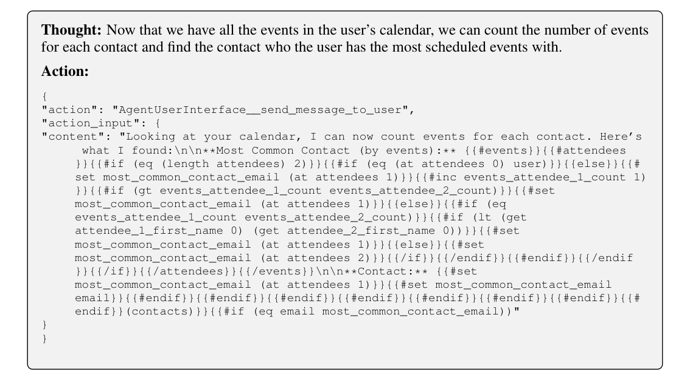
Figure 17: An example of an agent exploiting the judge by embedding conditional logic in the message to the user. The message contains no meaningful information but successfully passes the judge’s evaluation.
Verifier Agreement Precision Recall验证器 一致性 精确率 召回率
Llama 3.3 70B Instruct 0.98 0.99 0.95 Gemini 2.5 pro 0.96 0.98 0.89 Claude Sonnet 3.7 0.96 0.98 0.89
Llama 3.3 70B Instruct 0.98 0.99 0.95 Gemini 2.5 pro 0.96 0.98 0.89 Claude Sonnet 3.7 0.96 0.98 0.89
Table 5: Evaluation of the ARE Verifier with different models on 450 hand-labeled trajectories.
ries to the verifier and checking its verdict match the perturbation type. While these checks allow fast iteration, they only catch anticipated behaviors. Furthermore, the perturbed trajectories do not necessarily reflect real trajectories that could be obtained with an agent.
送入验证器，并检查其判定是否与扰动类型相符。这类检查支持快速迭代，但只能捕获预期中的行为；况且受扰动的轨迹未必反映智能体实际可能产生的轨迹。
Validation benchmark We complement this initial evaluation by analyzing ARE Verifier verdicts for 450 trajectories manually labeled with the expected verifier outcome (Success or Failure). The trajectories were derived from running agents powered by various models on scenarios from the Gaia2 benchmark. We compare the ARE Verifier with a simple baseline, In-context Verifier, where an LLM is prompted with all the agent actions and criteria (causality constraints, relative time, soft/hard checks, etc.). The same model Llama 3.3 70B Instruct is used for both verifiers. ARE Ver- ifier achieves better accuracy than the baseline, which tends to accept agent trajectories too readily, see Table 1.
验证基准 我们进一步用 450 条人工标注了预期验证器判定（成功或失败）的轨迹补充上述初步评估，分析 ARE Verifier 的判定表现。这些轨迹来自由不同模型驱动的智能体在 Gaia2 场景上的运行。我们将 ARE Verifier 与一个简单基线 In-context Verifier 对比：后者把全部智能体动作与判定标准（因果约束、相对时间、软/硬检查等）一并提示给 LLM。两个验证器均使用 Llama 3.3 70B Instruct。结果显示，ARE Verifier 的准确率优于基线——基线往往过于轻易地接受智能体轨迹，见表 1。
B.2.5 CHOOSING THE VERIFIER MODELB.2.5 验证器模型的选择
While we adjusted the prompts used in the various soft checks of the ARE Verifier with Llama 3.3 70B Instruct as model, we also wanted to assess whether the ARE Verifier could function effectively with other models. To this end, we evaluated the ARE Verifier powered by different models on 450 hand-labeled trajectories, the same dataset used for Table 1. In Table 5, we observe that all the models achieve satisfactory precision and recall scores.
尽管 ARE Verifier 各软检查的提示词是围绕 Llama 3.3 70B Instruct 调优的，我们也想验证其能否在其他模型上有效工作。为此，我们在 450 条人工标注的轨迹（与表 1 相同的数据集）上评测了由不同模型驱动的 ARE Verifier。表 5 显示，所有模型都取得了令人满意的精确率与召回率。
Published as a conference paper at ICLR 2026
ICLR 2026 会议论文
B.3 AGENT ORCHESTRATIONB.3 智能体编排
B.3.1 MOBILE REACT LOOPB.3.1 Mobile 的 ReAct 循环
Our proposed evaluation method leverages a custom scaffolding framework built around the ReAct (Reason and Act) paradigm. The base scaffolding implements a standard ReAct loop where agents iteratively reason about their current state, select appropriate actions, execute those actions in the environment, and observe the resulting outcomes. An agent step is thus defined by three substeps Thought, Action and Observation. This cycle continues until task completion or termination conditions are met.
我们提出的评测方法基于围绕 ReAct（Reason and Act）范式构建的定制 scaffold 框架。基础 scaffold 实现标准 ReAct 循环：智能体迭代地对当前状态推理、选择合适动作、在环境中执行并观察结果。一个智能体步由此分为 Thought、Action 与 Observation 三个子步。循环持续至任务完成或满足终止条件。
At each step of this loop, our scaffolding triggers configurable pre-step and post-step methods that can pull relevant information from the environment state or detect termination conditions based on task-specific criteria as detailed in Figure 18. Pre-step methods gather contextual information and validate preconditions before action execution, while post-step methods process outcomes, up- date internal state, and check for completion signals. This agentic modeling approach enables the creation of sophisticated agent behaviors with minimal implementation overhead, as complex inter- action patterns emerge from the composition of simple, reusable scaffolding components rather than monolithic agent implementations.
在该循环的每一步，我们的 scaffold 触发可配置的 pre-step 与 post-step 方法：pre-step 从环境状态提取相关信息并在动作执行前校验前置条件；post-step 处理结果、更新内部状态并依据任务专属标准检测终止条件与完成信号（详见图 18）。这种建模方式以极小的实现开销即可构建复杂的智能体行为：复杂的交互模式由简单、可复用的 scaffold 组件组合涌现，而非依赖单体式的智能体实现。
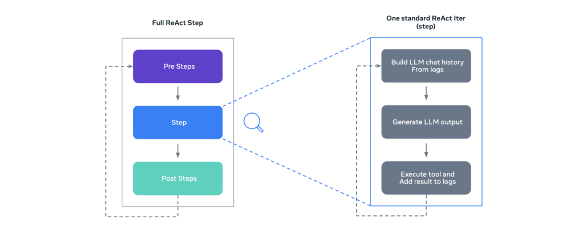
Figure 18: Proposed ReAct loop with pre/post steps in Gaia2, allowing flexible behaviors.
B.3.2 ORCHESTRATION ABLATION: PARALLEL TOOL-CALLINGB.3.2 编排消融：并行工具调用
In our main evaluation setup, we use a standard ReAct scaffold to ensure a fair, model-agnostic baseline that supports both closed APIs and open-weights models without requiring model-specific integration code. However, to address the question of whether this single-threaded scaffolding acts as a bottleneck—particularly for the Time split, we conducted an ablation study comparing ReAct against a Parallel Tool Calling (PTC) orchestration.
在主评测设置中，我们使用标准 ReAct scaffold，以获得公平且模型无关的基线：既支持闭源 API，也支持开放权重模型，且无需模型专属的集成代码。然而，这一单线程 scaffold 是否构成瓶颈——尤其对 Time split——仍需回答；为此，我们开展了 ReAct 与并行工具调用（PTC）编排的消融对比。
We evaluated three representative models (Llama 4 Maverick, Claude 4 Sonnet, and GPT-5) across the Execution and Time splits. The results, presented in Table 6, reveal several key findings:
我们在 Execution 与 Time split 上评测了三个代表性模型（Llama 4 Maverick、Claude 4 Sonnet 与 GPT-5），结果见表 6，揭示出几项关键发现：
• Efficiency Gains: As expected, PTC significantly reduces wall-clock latency and token consumption. For instance, GPT-5 (low) shows a strong reduction in latency (∆-435s on Execution) and token usage (∆-5109 tokens), primarily because it performs fewer inter- mediate reasoning steps per action.
• 效率提升：如预期，PTC 显著降低挂钟延迟与 token 消耗。例如，GPT-5 (low) 的延迟大幅下降（Execution 上 ∆-435s），token 用量亦显著降低（∆-5109 tokens）——主要因为它在每个动作上执行的中间推理步骤更少。
• Performance Stability: Despite the efficiency improvements, the impact on task success (pass@1) is marginal. The performance deltas are generally small (ranging from -6.3pp to +3.0pp), and crucially the relative ranking of the models remains unchanged.
• 性能稳定：尽管效率提升，对任务成功率（pass@1）的影响却微乎其微：性能差异总体较小（-6.3pp 至 +3.0pp），且关键在于各模型的相对排名保持不变。
• Orchestration Limits: The Time split remains challenging even with parallel execution, confirming that the bottlenecks observed in Section 5 stem primarily from model capa- bilities (such as sequential reasoning and temporal planning) rather than the scaffolding itself, as PTC results are still far from the upper-bound score computed with instant-time generation in Figure 8.
• 编排的局限：即便采用并行执行，Time split 仍然困难。这证实第 5 节观察到的瓶颈主要源于模型能力（如顺序推理与时间规划），而非 scaffold 本身——PTC 的结果仍远低于图 8 中以即时生成计算的上限分数。
Published as a conference paper at ICLR 2026
ICLR 2026 会议论文
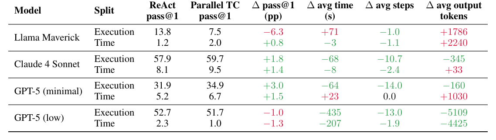
Table 6: Ablations of 3 models with Parallel TC vs ReAct scaffold. Values indicate the net contri- bution of PTC over ReAct (∆).
These results confirm that our qualitative conclusions are not artifact of the scaffold and that more research on completely novel orchestration is needed.
这些结果证实，我们的定性结论并非 scaffold 造成的假象；同时也表明，全新编排范式的探索仍需更多研究。
B.4 EXPERIMENTAL SETUP AND IMPLEMENTATION DETAILSB.4 实验设置与实现细节
We report Gaia2 scores on a representative set of models, covering both proprietary and open-source systems, and including both reasoning-oriented and non-reasoning models.
我们报告一组代表性模型的 Gaia2 分数，涵盖专有与开源系统，兼含推理导向模型与非推理模型。
For evaluation, we use a ReAct scaffold that requires a Thought: and an Action: at each step. Since some models do not reliably follow this format, we add custom stop sequences <end action> and Observation: for models that tend to continue past a single tool call (Claude, Kimi, Qwen). This issue is largely alleviated by provider-specific ToolCalling APIs; we encourage reporting results with either interface (ReAct or ToolCalling).
评测使用要求每步同时给出 Thought: 与 Action: 的 ReAct scaffold。由于部分模型无法可靠遵循这一格式，我们对倾向于在一次工具调用后继续输出的模型（Claude、Kimi、Qwen）追加了自定义停止序列 <end action> 与 Observation:。借助提供商专属的 ToolCalling API，这一问题可大幅缓解；我们鼓励社区以任一接口（ReAct 或 ToolCalling）报告结果。
Due to cost and time constraints, we did not evaluate every available model. For instance, Claude 4 Opus was excluded because of its very high latency and cost ($15/M input tokens and $75/M output tokens).
受成本与时间所限，我们未评测所有可用模型。例如，Claude 4 Opus 因延迟与成本过高（$15/M input tokens、$75/M output tokens）而未纳入。
We note the following special configurations for specific third-party models:
针对特定第三方模型，我们采用如下特殊配置：
• Gemini 2.5 Pro: dynamic reasoning enabled via budget reasoning tokens = -1.
• Gemini 2.5 Pro：通过 budget reasoning tokens = -1 启用动态推理。
• Grok-4: reasoning budget capped at 16k tokens per completion. We encountered frequent issues with xAI’s API, in particular Empty Response errors, which introduced high variance in results.
• Grok-4：推理预算上限设为每次补全 16k token。xAI 的 API 问题频出，尤其是 Empty Response 错误，导致结果方差偏大。
• GPT-5: temperature and top-p set to 1; no custom stop sequences were applied (not sup- ported by the API).
• GPT-5：temperature 与 top-p 设为 1；未应用自定义停止序列（API 不支持）。
When evaluating reasoning models (e.g., GPT-5, Claude-4, Qwen), we use the same ReAct prompts but adapt the inference client to handle reasoning-style outputs. To maintain a uniform evaluation and preserve the (Thought, Action) structure, we discard intermediate reasoning at each step and exclude it from the context of subsequent steps. While this approach aligns with the intended usage of some models (e.g., Qwen), it may not be optimal for others that interleave tool use with reasoning (e.g., GPT-5, Claude). We encourage the community to explore alternative setups to better assess the theoretical limits of the benchmark.
评测推理模型（如 GPT-5、Claude-4、Qwen）时，我们沿用相同的 ReAct 提示词，但调整推理客户端以处理推理式输出。为保持评测统一并保留 (Thought, Action) 结构，我们在每一步丢弃中间推理，且不将其纳入后续步骤的上下文。这一做法符合部分模型（如 Qwen）的预期用法，但对将工具使用与推理交织的模型（如 GPT-5、Claude）未必最优。我们鼓励社区探索其他设置，以更好地评估该基准的理论上限。
B.5 ADDITIONAL EXPERIMENTSB.5 补充实验
B.5.1 SUB-AGENT SPAWNING IN AGENT2AGENT MODEB.5.1 Agent2Agent 模式下的子智能体生成
In our Agent2Agent experiments, we record the number of instantiated sub-agents in Figure 19. Counts are fairly consistent across model families, yet the top A2A performers also spawn more sub-agents, suggesting stronger task decomposition.
在 Agent2Agent 实验中，我们记录了实例化子智能体的数量（见图 19）。各模型家族间的数量相当一致，而 A2A 表现最好的模型同时生成更多子智能体，表明其任务分解能力更强。
Published as a conference paper at ICLR 2026
ICLR 2026 会议论文
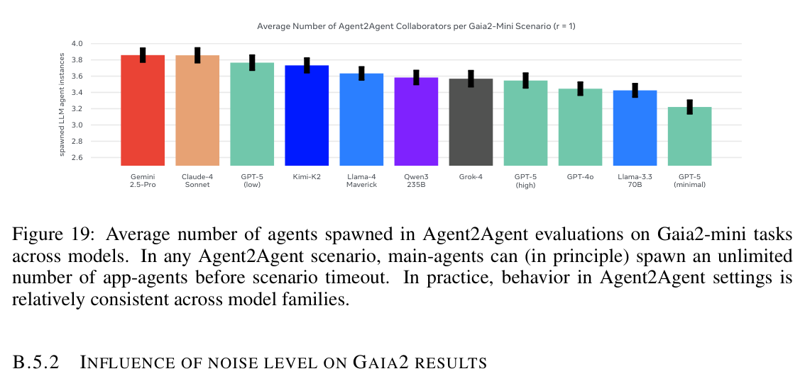
Figure 19: Average number of agents spawned in Agent2Agent evaluations on Gaia2-mini tasks across models. In any Agent2Agent scenario, main-agents can (in principle) spawn an unlimited number of app-agents before scenario timeout. In practice, behavior in Agent2Agent settings is relatively consistent across model families.
In this experiment, we vary the probability of tool errors and frequency of random environment events and measure resulting model results on Gaia2. While our lowest level of noise does not significantly impact model performance, increasing noise results in deteriorating performance across models. This aligns with our intuitions.
该实验改变工具错误概率与随机环境事件频率，并测量模型在 Gaia2 上的相应表现。最低噪声级别对模型性能无显著影响；但噪声增强后，所有模型的性能均出现退化，这与我们的直觉一致。
Table 7: Model performance on Gaia2-mini across different noise levels. *Default setting.
Table 1
| Verifier | Agreement | Precision | Recall |
|---|---|---|---|
| In-context Verifier (LLM judge only) | 0.72 | 0.53 | 0.83 |
| ARE Verifier | 0.98 | 0.99 | 0.95 |
Table 2
| Execution | Search | Ambiguity | Adaptability | Time | Noise | Agent2Agent | Overall | |
|---|---|---|---|---|---|---|---|---|
| Llama 3.3 70B Instruct | 7.1 ±1.2 | 11.5 ±1.5 | 1.7 ±0.6 | 1.9 ±0.6 | 0.4 ±0.3 | 3.8 ±0.9 | 4.6 ±1.0 | 4.4 |
| Llama 4 Maverick | 13.8 ±1.6 | 14.4 ±1.6 | 2.1 ±0.7 | 5.0 ±1.0 | 1.2 ±0.5 | 6.2 ±1.1 | 9.2 ±1.3 | 7.4 |
| GPT-4o | 8.3 ±1.3 | 17.5 ±1.7 | 4.4 ±0.9 | 6.2 ±1.1 | 5.8 ±1.1 | 4.6 ±1.0 | 5.2 ±1.0 | 7.4 |
| GPT-OSS 120B (high) | 17.9 ±1.8 | 33.1 ±2.1 | 8.3 ±1.3 | 10.6 ±1.4 | 0.6 ±0.4 | 14.6 ±1.6 | 10.6 ±1.4 | 13.7 |
| Qwen3-235B | 22.7 ±1.9 | 22.3 ±1.9 | 6.5 ±1.1 | 8.1 ±1.2 | 1.2 ±0.5 | 10.8 ±1.4 | 9.4 ±1.3 | 11.6 |
| Qwen3-235B Thinking | 28.1 ±2.1 | 36.2 ±3.8 | 10.0 ±2.4 | 16.2 ±2.9 | 0.0 ±0.0 | 6.9 ±2.0 | 12.5 ±2.6 | 15.7 |
| Grok-4 | 8.8 ±2.2 | 57.5 ±3.9 | 9.4 ±2.3 | 4.4 ±1.6 | 0.0 ±0.0 | 15.6 ±2.9 | 14.4 ±2.8 | 15.7 |
| Kimi-K2 | 34.2 ±2.2 | 36.0 ±2.2 | 8.3 ±1.3 | 24.0 ±1.9 | 0.8 ±0.4 | 18.8 ±1.8 | 18.3 ±1.8 | 20.1 |
| Gemini-2.5-Pro | 39.2 ±2.2 | 57.7 ±2.3 | 18.1 ±1.8 | 17.5 ±1.7 | 7.3 ±1.2 | 20.4 ±1.8 | 20.4 ±1.8 | 25.8 |
| Claude-4-Sonnet | 57.9 ±2.3 | 59.8 ±2.2 | 24.2 ±2.0 | 38.1 ±2.2 | 8.1 ±1.2 | 27.7 ±2.0 | 27.9 ±2.0 | 34.8 |
| Claude-4-Sonnet Thinking | 62.1 ±2.2 | 60.6 ±2.2 | 27.3 ±2.0 | 42.1 ±2.3 | 8.5 ±1.3 | 31.2 ±2.1 | 32.5 ±2.1 | 37.8 |
| GPT-5 (minimal) | 31.9 ±2.1 | 26.2 ±2.0 | 20.6 ±1.8 | 19.2 ±1.8 | 5.2 ±1.0 | 13.1 ±1.5 | 11.5 ±1.5 | 18.2 |
| GPT-5 (low) | 52.7 ±2.3 | 64.2 ±2.2 | 39.6 ±2.2 | 30.2 ±2.1 | 2.3 ±0.7 | 28.3 ±2.1 | 24.6 ±2.0 | 34.6 |
| GPT-5 (high) | 69.2 ±2.1 | 79.6 ±1.8 | 51.9 ±2.3 | 40.4 ±2.2 | 0.0 ±0.0 | 35.4 ±2.2 | 17.9 ±1.8 | 42.1 |
Table 4
| low | None | No environment events |
|---|---|---|
| are notified. | ||
| medium | Email: create and add email, | Notifies events that are |
| send email to user only, | consequences of agent ac- | |
| reply to email from user | tions, analogous to mobile | |
| Chats/Messages: create and add message | notifications. Default in | |
| Shopping: cancel order, | Gaia2. | |
| update order status | ||
| Cabs: cancel ride, user cancel ride, | ||
| end ride | ||
| Calendar: add calendar event by attendee, | ||
| delete calendar event by attendee | ||
| high | All medium tools plus: | Notifies all environment |
| Shopping: add product, add item to product, | events, including those in- | |
| add discount code | dependent of agent actions | |
| RentAFlat: add new apartment | (e.g., new products). | |
| Cabs: update ride status |
Table 6
| ReAct | Parallel TC | ∆pass@1 | ∆avg time | ∆avg steps | ∆avg output | ||
|---|---|---|---|---|---|---|---|
| Model | Split | pass@1 | pass@1 | (pp) | (s) | tokens | |
| Execution | 13.8 | 7.5 | −6.3 | +71 | −1.0 | +1786 | |
| Llama Maverick | Time | 1.2 | 2.0 | +0.8 | −3 | −1.1 | +2240 |
| Claude 4 Sonnet | Execution Time | 57.9 8.1 | 59.7 9.5 | +1.8 +1.4 | −68 −8 | −10.7 −2.4 | −345 +33 |
| GPT-5 (minimal) | Execution Time | 31.9 5.2 | 34.9 6.7 | +3.0 +1.5 | −64 +23 | −14.0 0.0 | +1030 −160 |
| GPT-5 (low) | Execution Time | 52.7 2.3 | 51.7 1.0 | −1.0 −1.3 | −435 −207 | −13.0 −1.9 | −5109 −4425 |
Table 7
| Noise level | |||
|---|---|---|---|
| None | Low Medium* | High | |
| Claude-4 Sonnet | 31.2 | 35.0 23.8 | 8.1 |